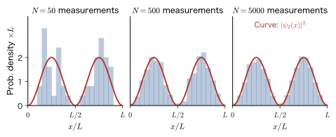
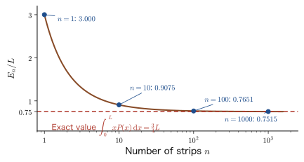
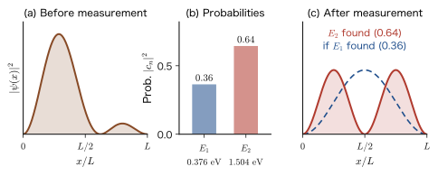
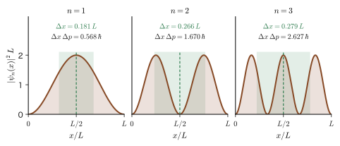
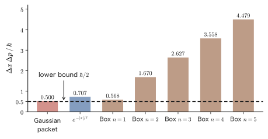
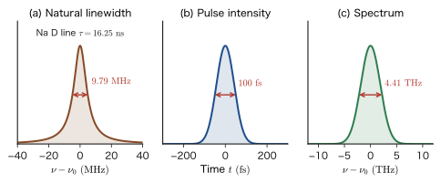

Chapter 8The Axioms of Quantum Mechanics — The Born Interpretation, Commutation Relations, and the Uncertainty Principle
In the previous chapter we saw that when electrons are fired one at a time, we cannot predict where on the detection plane beyond the slits each one will arrive, and that only when many electrons are collected does a pattern of fringes of the form $\abs{\psi}^2$ (interference fringes or a diffraction distribution) appear. What, then, does the wave function $\psi$ actually represent? It was Born who answered this question with “$\abs{\psi}^2$ is the probability density of finding the particle.” This answer is one of the strangest and, at the same time, most certain rules of quantum mechanics. “Why it is so” cannot be derived by tracing it back any further. Together with the other rules (physical quantities are represented by operators, the measured values are only eigenvalues, position and momentum do not commute, and the wave function changes according to the Schrödinger equation), it is a starting point that we accept as correct as long as it agrees with experiment—that is, what is called an axiom.
In classical mechanics (AD 03, “Introductory University Physics”), the state of a particle is determined by the pair of position $x$ and momentum $p$, and Newton's equation of motion determined the future. In quantum mechanics, the state is represented by the wave function $\psi$, and position and momentum have probability distributions. Therefore, instead of saying “the position is $x$,” we speak of the mean value (expectation value) $\langle x\rangle$ and the spread around it (standard deviation) $\Delta x$. Moreover, position and momentum form a pair for which “swapping the order changes the result” ($\hat{x}\hat{p}-\hat{p}\hat{x}=i\hbar$), and this fact leads directly to the Heisenberg uncertainty principle $\Delta x\,\Delta p\ge\hbar/2$. In this chapter, we follow that derivation without omitting a single line of the intermediate equations. The uncertainty principle arises not “because the measuring instrument is poor” but as a mathematical consequence of the fact that the state of a particle is a wave.
This chapter is the last chapter of Part II, and it sums up the history of quantum theory, which began with blackbody radiation (Planck), in the form of “axioms.” At the same time, here we obtain the tools used in all chapters from Part III onward—normalization, expectation values, standard deviations, commutators, and eigenvalues and measurement. In materials science, the electron density in X-ray diffraction and in density functional theory is a sum of $\abs{\psi}^2$, and the image of a scanning tunneling microscope (STM) shows the spatial distribution of $\abs{\psi}^2$. The linewidth of an emission spectrum is connected to the lifetime of the excited state through the uncertainty relation. The kinetic energy of an electron in a nanocrystal can be estimated from the size of the confinement by means of the uncertainty relation. This chapter provides the foundation for all of this. Note also that in this chapter we do not use Dirac notation (bra and ket) and write everything with integrals. Dirac notation is introduced in Chapter 10, Section 10.2.
The course of the chapter is as follows. First we discuss states and probability (Section 8.1), expectation values (Section 8.2), and the rules of measurement (Section 8.3). The rules of measurement form the foundation for the reason (Section 8.4.5) why the commutation relation determines whether “two physical quantities can be determined simultaneously.” Next, by way of the commutation relation between position and momentum (Section 8.4) and the standard deviation, which is a measure of spread (Section 8.5), we derive the uncertainty principle (Section 8.6) and examine its meaning (Section 8.7). Finally, we state the axiom of time evolution and the correct meaning of the uncertainty relation between energy and time (Section 8.8). In this book, we supplement the three basic principles of quantum mechanics (first principle = the Born interpretation, second principle = the commutation relation between position and momentum, third principle = time evolution) with Axiom 8.2 on expectation values and Axiom 8.3 on measurement, and number them Axioms 8.1–8.5. That is, the first principle is Axiom 8.1, the second principle is Axiom 8.4, and the third principle is Axiom 8.5 (Axiom 8.2 is derived from Axiom 8.3 in Section 8.3.3).
- Be able to state the Born interpretation (Axiom 8.1) and normalize wave functions, $\int\abs{\psi}^2\dd\tau=1$. Be able to use the appropriate $\dd\tau$ in one dimension, in three dimensions, and in spherical coordinates
- Be able to derive the continuous expectation value $\int xP(x)\dd x$ from the discrete expectation value by way of the Riemann-sum method, and to use the quantum-mechanical expectation value $\langle A\rangle=\int\psi^*\hat{A}\psi\dd\tau$ fluently
- Be able to explain that the measured values of a physical quantity are limited to the eigenvalues of its operator, that the square of the absolute value of an eigenfunction-expansion coefficient is a probability, and that the wave function collapses upon measurement
- Be able to verify the commutation relation $\comm{\hat{x}}{\hat{p}}=i\hbar$ between position and momentum by letting $\hat{p}=-i\hbar\,\dd/\dd x$ act on a concrete function, and to calculate with the commutator formulas
- Be able to calculate the variance $(\Delta A)^2=\langle A^2\rangle-\langle A\rangle^2$ and the standard deviation, and to find $\Delta x$ and $\Delta p$ for a particle in a box and for a Gaussian wave packet
- Be able to prove the Robertson inequality $\Delta A\,\Delta B\ge\tfrac12\abs{\langle\comm{\hat{A}}{\hat{B}}\rangle}$ from the Schwarz inequality and to derive $\Delta x\,\Delta p\ge\hbar/2$. Be able to show that the Gaussian wave packet is the only state that satisfies equality
- Be able to distinguish the three meanings of the uncertainty relation (spread of the state, measurement error and disturbance, simultaneous measurement), and to explain the correct meaning of the uncertainty relation between energy and time (Mandelstam–Tamm, natural linewidth)
Source notes: Yasuhide Mochizuki, “Physics Notes: Quantum Mechanics 1,” pp. 14–16 (p. 14 is blank), and one photograph of a handwritten note dealing with expectation values (mean values).
8.1 The Born Interpretation — The Wave Function and Probability Density
8.1.1 Starting from experimental facts—the wave function expresses “how readily the particle is found”
Let us summarize once more what we saw in Chapter 2, Section 2.1 and Chapter 7. When we send electrons toward the slits one at a time, each electron appears as a particle at just a single point on the detection plane. Which point it appears at cannot be predicted, however precisely we prepare the apparatus and the initial conditions. Yet if we repeat the same experiment thousands of times and collect the points where the electrons appeared, a pattern of fringes with clearly distinct light and dark regions forms. The darkness of those fringes is proportional to $\abs{\psi(x)}^2$, computed from the wave function $\psi(x)$. “The result of each individual run cannot be predicted, but the distribution built up from many runs can”—this is the form of the predictions of quantum mechanics.
Let us check this situation with a somewhat simpler example. The $n=2$ state of a particle in an infinite well of width $L$ (Chapter 10) is $\psi_2(x)=\sqrt{2/L}\,\sin(2\pi x/L)$ ($0\le x\le L$). Suppose we measure the position of an electron prepared in this state $N$ times, redoing the preparation each time. Figure 8.1 shows the result of sorting the measured positions into 20 intervals and counting them (simulated data generated with random numbers on a computer). For $N=50$ the histogram is bumpy, but for $N=5000$ the histogram lies on top of the curve of $\abs{\psi_2(x)}^2$.

We state this fact as the first axiom of quantum mechanics, as follows.
Axiom 8.1: First principle of quantum mechanics (Born interpretation)
The state of a particle is represented by a wave function $\psi$. The square of the absolute value of the wave function, $\abs{\psi}^2=\psi^*\psi$, is the probability density of the particle's position. That is, in one dimension, the probability of finding the particle between positions $x$ and $x+\dd x$ is $\abs{\psi(x)}^2\dd x$, and in three dimensions, the probability of finding it within a small volume $\dd\tau$ around position $\bm{r}$ is $\abs{\psi(\bm{r})}^2\dd\tau$.
Here $\psi^*$ is the complex conjugate of $\psi$ (if $\psi=u+iv$, then $\psi^*=u-iv$), and $\abs{\psi}^2=\psi^*\psi=u^2+v^2\ge0$ is real. The wave function itself is a complex number and cannot be measured directly. All that shows up in a measurement is $\abs{\psi}^2$, which we obtain by squaring to make it real.
Intuition: The strangest principle—Schrödinger did not know the meaning of $\psi$
This principle is the strangest principle in quantum mechanics. Schrödinger himself did not at first know what the wave function, the solution of his own equation, represents. When he published his wave equation in 1926, Schrödinger regarded $\psi$ as something like a cloud of electric charge spread through space, and tried to regard the electron as a “wave packet.” However, a wave packet in free space only keeps spreading as time passes, which is incompatible with the picture of an electron observed as a small single point on a detector. The person who resolved this difficulty was the German physicist Born. In his 1926 paper, which treated the scattering of particles by atoms with wave mechanics, Born put forward the bold hypothesis that “the square of the absolute value of the wave function is a probability density.” If we accept this hypothesis, a surprising amount can be explained: atomic spectra, chemical bonds, the electrical conduction of solids, the optical absorption of semiconductors, STM images, and so on. No experimental result contradicting Born's rule has been found to this day. For this work, among other things, Born received the 1954 Nobel Prize in Physics.
Einstein, on the other hand, could not become comfortable with the idea that probability lies at the foundation of nature. The famous remark “God does not play dice” is a rewording of an idea in a letter to Born at the end of 1926. Probability in classical physics (the number that comes up on a die, the velocity distribution of gas molecules) reflects the fact that we do not know detailed information, and if we knew more details we could predict the outcome. Probability in quantum mechanics is not like that. Even for electrons prepared in the same state, a position measurement makes them appear at a different place each time, and however carefully we prepare them, the result of a single run is not determined. This is “probability in principle,” and it is the root of the strangeness of Born's rule.
8.1.2 Probability density and probability
Let us rewrite the statement of Axiom 8.1 as a formula. The probability that the particle is found in the interval $a\le x\le b$ is the integral of $\abs{\psi}^2$ over that interval.
\begin{equation} P(a\le x\le b)=\int_a^b\abs{\psi(x)}^2\dd x \label{eq:8-prob} \end{equation}What matters here is that $\abs{\psi(x)}^2$ is not a “probability” but a probability density. Just as the mass density of a thin wire is not by itself a mass (in grams) but becomes a mass only when multiplied by a length, $\abs{\psi(x)}^2$ becomes a probability only when multiplied by the length of the interval $\dd x$. In particular, the probability of finding the particle at exactly one point is $0$.
Dimension check: Units of the wave function
Since a probability is a dimensionless number, $\abs{\psi(x)}^2\dd x$ is dimensionless, and the unit of a one-dimensional wave function $\psi$ is $\mathrm{m^{-1/2}}$. In three dimensions $\abs{\psi(\bm{r})}^2\dd\tau$ is dimensionless, so the unit of $\psi$ is $\mathrm{m^{-3/2}}$. For example, the probability density at $r=0$ for the ground state of the hydrogen atom, $\psi_{1s}=(\pi a_0^3)^{-1/2}e^{-r/a_0}$, is $\abs{\psi(0)}^2=1/(\pi a_0^3)=2.15\times10^{30}\ \mathrm{m^{-3}}$ ($a_0=5.29\times10^{-11}\ \mathrm{m}$). This means that the probability of finding the electron within a volume of $1\ \mathrm{pm^3}=10^{-36}\ \mathrm{m^3}$ at the position of the nucleus is about $2\times10^{-6}$.
8.1.3 Normalization of the wave function
A particle must exist somewhere in the universe. Therefore, the sum (integral) of the probability density over all space must be exactly $1$.
\begin{equation} \int_{\text{entire range}}(\text{probability density})\dd\tau=1\quad\text{therefore,}\quad\int_{\text{entire range}}\abs{\psi}^2\dd\tau=1 \label{eq:8-norm} \end{equation}Definition 8.1: Normalization of the wave function
A wave function that satisfies Eq. \eqref{eq:8-norm} is said to be normalized, and imposing this condition on a wave function is called normalization of the wave function.
Supplement: The volume element $\dd\tau$ and the “entire range”
If $\psi$ is a one-dimensional wave function, $\dd\tau=\dd x$ (the entire range is $-\infty\lt x\lt\infty$), but in three dimensions $\dd\tau=\dd x\,\dd y\,\dd z$ (the entire range is all space). In spherical coordinates $(r,\theta,\varphi)$, $\dd\tau=r^2\sin\theta\,\dd r\,\dd\theta\,\dd\varphi$ ($0\le r\lt\infty$, $0\le\theta\le\pi$, $0\le\varphi\lt2\pi$; University Mathematics, Chapter 7, Section 7.7), and in cylindrical coordinates $\dd\tau=\rho\,\dd\rho\,\dd\varphi\,\dd z$. Since the probability does not change when we change the coordinate system, $\dd\tau$ carries a Jacobian ($r^2\sin\theta$ or $\rho$).
Let us confirm the concrete procedure of normalization. The Schrödinger equation is linear and homogeneous in $\psi$, so if $f$ is a solution, then any constant multiple $cf$ is also a solution. We therefore multiply the solution $f$ obtained from the equation by a constant $N$ and choose $N$ so that $\psi=Nf$ is normalized. If we take $N$ to be a positive real number, then
\begin{equation} N^2\int\abs{f}^2\dd\tau=1\quad\Longrightarrow\quad N=\frac{1}{\sqrt{\int\abs{f}^2\dd\tau}} \label{eq:8-Nconst} \end{equation}holds. This $N$ is called the normalization constant. However, this procedure can be used only when the integral $\int\abs{f}^2\dd\tau$ has a finite value (when $f$ is square-integrable). Note also that normalization is preserved when $N$ is multiplied by a complex number of absolute value $1$ (a phase factor). As described below, the overall phase does not affect the probability, so we usually take $N$ to be a positive real number.
Example 8.1: Normalizing a two-sided exponential function
Suppose the wave function of an electron is $\psi(x)=A\,e^{-\abs{x}/\ell}$ ($\ell\gt0$ is a constant with the dimension of length, and $A$ is a positive constant). (1) Find the normalization constant $A$. (2) Let $\ell=0.5\ \mathrm{nm}$. Find the probability that the electron is found in the range $\abs{x}\lt\ell$ and the probability that it is found in the range $\abs{x}\gt2\ell$.
Solution. (1) Since $\abs{\psi}^2=A^2e^{-2\abs{x}/\ell}$ is an even function of $x$, the integral over the entire range is twice the integral over $x\gt0$.
$$ \int_{-\infty}^{\infty}A^2e^{-2\abs{x}/\ell}\dd x=2A^2\int_0^{\infty}e^{-2x/\ell}\dd x=2A^2\left[-\frac{\ell}{2}e^{-2x/\ell}\right]_0^{\infty}=2A^2\cdot\frac{\ell}{2}=A^2\ell $$Since this equals $1$, $A=1/\sqrt{\ell}$ (the unit is $\mathrm{m^{-1/2}}$, consistent with the Dimension check in Section 8.1.2). (2) The probability density is $\abs{\psi}^2=\dfrac{1}{\ell}e^{-2\abs{x}/\ell}$. The probability of $\abs{x}\lt\ell$ is, by Eq. \eqref{eq:8-prob},
$$ P(\abs{x}\lt\ell)=2\int_0^{\ell}\frac{1}{\ell}e^{-2x/\ell}\dd x=2\cdot\frac{1}{\ell}\cdot\frac{\ell}{2}\left(1-e^{-2}\right)=1-e^{-2}=0.8647 $$The probability of $\abs{x}\gt2\ell$, using the same antiderivative $-\dfrac{\ell}{2}e^{-2x/\ell}$, is $P(\abs{x}\gt2\ell)=2\displaystyle\int_{2\ell}^{\infty}\dfrac{1}{\ell}e^{-2x/\ell}\dd x=2\cdot\dfrac{1}{\ell}\cdot\dfrac{\ell}{2}e^{-4}=e^{-4}=0.0183$ (the antiderivative equals $-\frac{\ell}{2}e^{-4}$ at $x=2\ell$ and $0$ as $x\to\infty$, so the definite integral is $\frac{\ell}{2}e^{-4}$). The electron is found at $\abs{x}\lt0.5\ \mathrm{nm}$ with a probability of about $86\%$, and the probability of finding it farther than $1\ \mathrm{nm}$ away is about $1.8\%$. Note also that the probability density at $x=0$ is $\abs{\psi(0)}^2=1/\ell=2.0\ \mathrm{nm^{-1}}$, which is the maximum.
8.1.4 Probability amplitude and phase—information that $\abs{\psi}^2$ alone does not determine
The wave function $\psi$ is a complex number, and only $\abs{\psi}^2$ gives probabilities. Therefore, even if we multiply $\psi$ by a complex number $e^{i\alpha}$ of absolute value $1$ ($\alpha$ is real), the probability density does not change.
\begin{equation} \abs{e^{i\alpha}\psi}^2=e^{-i\alpha}\psi^*\cdot e^{i\alpha}\psi=\abs{\psi}^2 \label{eq:8-phase} \end{equation}That is, the overall phase of a wave function does not show up in measurements. $\psi$ and $e^{i\alpha}\psi$ represent the same state. On the other hand, the relative phase of two wave functions does show up in measurements. With a double slit, let the amplitudes of the waves that have come through slit 1 and slit 2 be $\psi_1$ and $e^{i\delta}\psi_2$ ($\delta$ is the phase difference between the two paths); then the probability density on the detection plane is
\begin{equation} \abs{\psi_1+e^{i\delta}\psi_2}^2=\abs{\psi_1}^2+\abs{\psi_2}^2+2\,\mathrm{Re}\left(e^{i\delta}\psi_1^*\psi_2\right) \label{eq:8-interf} \end{equation}and the third term (the interference term) depends on $\delta$. What is added is not the probabilities $\abs{\psi_1}^2$, $\abs{\psi_2}^2$ but the probability amplitudes $\psi_1$, $\psi_2$, and the probability is obtained only by squaring after adding. This is the decisive difference between quantum-mechanical probabilities and classical probabilities. For this reason, $\psi$ is also called the “probability amplitude.”
8.1.5 Wave functions that cannot be normalized—plane waves
Not every wave function can be normalized. Consider the plane wave $\psi(x)=e^{ikx}$ of a free particle with definite momentum $p=\hbar k$. Since $\abs{\psi}^2=1$ is constant, independent of $x$, $\int_{-\infty}^{\infty}\abs{\psi}^2\dd x=\infty$, and no constant multiple makes it equal to $1$. Therefore, strictly speaking, a plane wave does not represent a state (in the sense of Axiom 8.1). An actual particle is a wave packet of finite extent spread somewhere in space (such as the Gaussian wave packet of Section 8.5), and a plane wave is the idealization of a “wave packet of very large width.” Even though it is idealized, the plane wave is indispensable as a tool for calculation. When we use plane waves, we fix their magnitude in one of the following two ways.
- Box normalization: Assuming that the particle is only inside a box of length $L$ (with periodic boundary conditions), set $\psi=L^{-1/2}e^{ikx}$. Then $\int_0^L\abs{\psi}^2\dd x=1$ (used in Chapter 10, Section 10.7).
- Continuum normalization: Set $\psi_p(x)=(2\pi\hbar)^{-1/2}e^{ipx/\hbar}$. Then $\int\psi_{p'}^*\psi_p\dd x=\delta(p-p')$ ($\delta$ is the Dirac delta function; University Mathematics, Chapter 30, Section 30.3). The integral of the square is not finite but equals $\delta(0)$, and it acquires meaning only when integrated (superposed) over $p$.
Hereafter, unless otherwise stated, wave functions are assumed to be normalized.
8.1.6 Probability density of momentum
Here we answer the question we raised in Chapter 2, Section 2.3: “If position has a probability density, does momentum have one too?” Let the momentum-space wave function, obtained by Fourier-transforming the position wave function $\psi(x)$, be written in the convention of this book (the equation of Chapter 2) as
\begin{equation} \phi(p)=\frac{1}{\sqrt{2\pi\hbar}}\int_{-\infty}^{\infty}\psi(x)\,e^{-ipx/\hbar}\dd x \label{eq:8-phi} \end{equation}Then $\abs{\phi(p)}^2\dd p$ is the probability that the momentum lies between $p$ and $p+\dd p$ (a statement of the same form as Axiom 8.1; in the next section, Section 8.3, we will see that this follows naturally from the axiom of measurement). If $\psi$ is normalized, $\phi$ is automatically normalized as well, by Parseval's identity $\int\abs{\phi}^2\dd p=\int\abs{\psi}^2\dd x=1$. Parseval's identity is the fact that the “integral of the square” does not change under the Fourier transform, and it can be shown as follows. Multiply $\phi$ of Eq. \eqref{eq:8-phi} by its complex conjugate and integrate over $p$, using $\dfrac{1}{2\pi\hbar}\displaystyle\int e^{ip(x-x')/\hbar}\dd p=\delta(x-x')$ (the delta function; University Mathematics, Chapter 30, Section 30.3). This gives $\displaystyle\int\abs{\phi}^2\dd p=\iint\psi^*(x)\,\psi(x')\,\delta(x-x')\dd x\dd x'=\int\abs{\psi}^2\dd x$. The wave function and its Fourier transform, $\psi\leftrightarrow\phi$, are the same state “as seen in position” and “as seen in momentum.”
Example 8.2: Momentum distribution of a two-sided exponential function
For the wave function $\psi(x)=\ell^{-1/2}e^{-\abs{x}/\ell}$ of Example 8.1, find the momentum representation $\phi(p)$. Also find the probability that the magnitude of the momentum satisfies $\abs{p}\lt\hbar/\ell$.
Solution. Substitute into Eq. \eqref{eq:8-phi} and split the integral into $x\lt0$ and $x\gt0$.
$$ \int_{-\infty}^{0}e^{x/\ell}e^{-ipx/\hbar}\dd x=\int_{-\infty}^{0}e^{(1/\ell-ip/\hbar)x}\dd x=\frac{1}{1/\ell-ip/\hbar},\qquad \int_{0}^{\infty}e^{-(1/\ell+ip/\hbar)x}\dd x=\frac{1}{1/\ell+ip/\hbar} $$(Since $e^{x/\ell}\to0$ as $x\to-\infty$ and $e^{-x/\ell}\to0$ as $x\to+\infty$, the boundary terms at infinity are $0$. The phase factors $e^{\mp ipx/\hbar}$ have absolute value $1$, so convergence is determined by $e^{\pm x/\ell}$ alone.) Adding the two, we can combine them into a fraction with the common denominator $(1/\ell)^2+(p/\hbar)^2$:
$$ \frac{1}{1/\ell-ip/\hbar}+\frac{1}{1/\ell+ip/\hbar}=\frac{2/\ell}{(1/\ell)^2+(p/\hbar)^2}=\frac{2\ell}{1+(p\ell/\hbar)^2} $$Therefore, multiplying by the coefficient $\dfrac{1}{\sqrt{2\pi\hbar}}\cdot\dfrac{1}{\sqrt{\ell}}$, we obtain
$$ \phi(p)=\frac{1}{\sqrt{2\pi\hbar\ell}}\cdot\frac{2\ell}{1+(p\ell/\hbar)^2}=\sqrt{\frac{2\ell}{\pi\hbar}}\;\frac{1}{1+(p\ell/\hbar)^2} $$Because the position distribution has a cusp (a kink) at $x=0$, the momentum distribution does not decay rapidly like a Gaussian function but decays slowly as $1/p^4$. Let us check the normalization. Letting $u=p\ell/\hbar$, we have $\dd p=(\hbar/\ell)\dd u$, and using $\displaystyle\int_{-\infty}^{\infty}\frac{\dd u}{(1+u^2)^2}=\frac{\pi}{2}$ we find
$$ \int_{-\infty}^{\infty}\abs{\phi}^2\dd p=\frac{2\ell}{\pi\hbar}\cdot\frac{\hbar}{\ell}\int_{-\infty}^{\infty}\frac{\dd u}{(1+u^2)^2}=\frac{2}{\pi}\cdot\frac{\pi}{2}=1 $$so Parseval's identity holds. The probability that $\abs{p}\lt\hbar/\ell$, that is, $\abs{u}\lt1$, is obtained using the antiderivative $\displaystyle\int\frac{\dd u}{(1+u^2)^2}=\frac{u}{2(1+u^2)}+\frac{1}{2}\arctan u$:
$$ P(\abs{p}\lt\hbar/\ell)=\frac{2}{\pi}\int_{-1}^{1}\frac{\dd u}{(1+u^2)^2}=\frac{2}{\pi}\cdot2\left(\frac{1}{4}+\frac{\pi}{8}\right)=\frac{1}{\pi}+\frac{1}{2}=0.818 $$About $82\%$ of the momentum distribution lies within a range of order $\hbar/\ell$. If the spread in position is of order $\ell$, the spread in momentum is of order $\hbar/\ell$ (we will see this precisely in Sections 8.5 and 8.6).
Example 8.3: Normalization in three dimensions (the hydrogen 2p orbital)
Normalize the three-dimensional wave function $\psi(r,\theta,\varphi)=N\,r\,e^{-r/2a_0}\cos\theta$ ($a_0$ is the Bohr radius and $N$ is a positive constant).
Solution. In spherical coordinates, $\dd\tau=r^2\sin\theta\,\dd r\,\dd\theta\,\dd\varphi$. Substituting $\abs{\psi}^2=N^2r^2e^{-r/a_0}\cos^2\theta$, the integral separates into a product of three integrals over $r$, $\theta$, and $\varphi$.
$$ \int\abs{\psi}^2\dd\tau=N^2\int_0^{\infty}r^4e^{-r/a_0}\dd r\;\int_0^{\pi}\cos^2\theta\,\sin\theta\dd\theta\;\int_0^{2\pi}\dd\varphi $$We evaluate each integral. By the formula $\int_0^{\infty}r^ne^{-r/a}\dd r=n!\,a^{n+1}$, the first integral is $4!\,a_0^5=24a_0^5$. For the second integral, setting $\cos\theta=t$ gives $-\sin\theta\dd\theta=\dd t$, so it equals $\int_{-1}^{1}t^2\dd t=\dfrac{2}{3}$. The third integral is $2\pi$. Hence
$$ \int\abs{\psi}^2\dd\tau=N^2\cdot24a_0^5\cdot\frac{2}{3}\cdot2\pi=32\pi a_0^5N^2=1 \qquad\Longrightarrow\qquad N=\frac{1}{\sqrt{32\pi\,a_0^5}} $$This wave function is the $2p_z$ orbital of the hydrogen atom (Chapter 16). The unit of $N$ is $\mathrm{m^{-5/2}}$ and the unit of $\psi$ is $N\cdot r\cdot1=\mathrm{m^{-3/2}}$, which agrees with the dimension check in Section 8.1.2.
Application: Electron density and STM images—$\abs{\psi}^2$ observed in materials science
In a material containing $N$ electrons, the density $\rho(\bm{r})$ of electrons near the position $\bm{r}$ is the sum of $\abs{\psi_i(\bm{r})}^2$ over the individual electrons (summed over the occupied orbitals, including the spin orientation). What X-ray diffraction observes is this electron density: one reconstructs the electron density distribution from the X-ray diffraction data of a crystal, and in density functional theory (AD 07) one finds the ground state by making the electron density itself the main quantity. In the scanning tunneling microscope (STM), a metal tip is brought to within about $1\ \mathrm{nm}$ of the surface and the tunneling current that flows is measured. This current is approximately proportional to $\abs{\psi}^2$ of the surface electrons at the position of the tip (the contribution of states near the Fermi level), as described by the Tersoff–Hamann theory. The tail of the wave function that penetrates from the surface into the vacuum decays exponentially with distance, so the current is extremely sensitive to the height of the tip and can trace out the bumps and dips of a single atom. The probability density of Axiom 8.1 is thus a quantity that can actually be “seen” as an image of the nanoscale world (tunneling is the subject of Chapter 12).
Related simulator: Expectation Values — From Dice to $|\psi|^2$. It lets you check the relation between probability density and expectation value step by step, from dice to wave functions.
8.2 Expectation Values — From Discrete to Continuous, and Then to Quantum Mechanics
Now that we know that $\abs{\psi}^2$ of a wave function is a probability density, we next want to answer the question, “What is the mean value of the position of a particle?” In general, the mean value of a quantity determined probabilistically is called the expectation value. In this section we start from the discrete expectation value learned in high school, pass through the Riemann-sum method (the definition of the integral), and derive the expectation value $\int xP(x)\dd x$ of a continuous random variable. After that, we see that this leads in a straight line to the expression for the expectation value in quantum mechanics. The mathematical side was also treated in the companion volume AD 02, Chapter 14. In this section we rewrite it step by step to fit the form used in quantum mechanics.
8.2.1 Expectation value of a discrete random variable
Definition 8.2: Expectation value (mean value)
Suppose a random variable $X$ takes the values $x_1,x_2,\dots,x_n$, and the probabilities of taking these values are $p_1,p_2,\dots,p_n$, respectively ($p_k\ge0$, $\sum_{k=1}^{n}p_k=1$). Then the expectation value of $X$ is
\begin{equation} E[X]=\sum_{k=1}^{n}x_k\,p_k \label{eq:8-Ediscrete} \end{equation}If the random variable takes continuous values, the expectation value is
\begin{equation} E=\int_{-\infty}^{\infty}x\,P(x)\dd x \label{eq:8-Econt} \end{equation}Here $P(x)$ is the probability density, and the probability that the value lies in the interval of width $x_{k+1}-x_k$ near $x_k$ is $p_k=P(x_k)\,(x_{k+1}-x_k)$.
The $E$ in this section is the initial letter of Expectation and does not denote energy. Eq. \eqref{eq:8-Ediscrete} is a weighted average, in which each value $x_k$ is weighted by its probability $p_k$ and summed. For a die, for example, $x_k=k$ and $p_k=1/6$, so $E[X]=(1+2+3+4+5+6)/6=3.5$. Since a roll of 3.5 never occurs, the expectation value is not “the value obtained in a single trial” but “the average over many trials.” How the measured values scatter from one measurement to the next, while the distribution over many measurements is determined by the probability density, is illustrated in Figure 1.4 of Chapter 1, Section 1.1. The expectation value written as a sum of $n$ values is sometimes given a subscript and written $E_n$ (the $E_n$ in Section 8.2.2 and Example 8.4 is the sum obtained by dividing the interval into $n$ equal parts). In quantum mechanics it is customary to write $\langle X\rangle$ (in angle brackets) instead of $E$. From here on, we use $\langle\ \rangle$ for expectation values in quantum mechanics.
8.2.2 Toward a continuous random variable—from $n$ equal parts to the Riemann-sum method
Let us follow concretely how the continuous formula \eqref{eq:8-Econt} emerges from the discrete formula \eqref{eq:8-Ediscrete}. Define a random variable (for example, the position of a particle) on an interval $0\le x\le L$. Divide this interval into $n$ equal parts and represent each subinterval by its value at the right end; then we can regard the random variable as taking the $n$ discrete values
$$ X=\frac{1}{n}L,\ \frac{2}{n}L,\ \dots,\ \frac{n}{n}L $$Let $p_k$ be the probability of taking the $k$th value $\dfrac{k}{n}L$ (the probability that the position lies in the $k$th subinterval). Then the sum of the probabilities is $1$, and by Eq. \eqref{eq:8-Ediscrete} the expectation value is
\begin{equation} \sum_{k=1}^{n}p_k=1,\qquad E=\sum_{k=1}^{n}\frac{k}{n}L\cdot p_k \label{eq:8-Esum} \end{equation}Now take the limit $n\to\infty$. The subintervals become infinitely fine, and the collection of discrete values becomes a continuum of values. That this limit can be expressed as an integral is thanks to the Riemann-sum method.
Math Tool: The Riemann-sum method (University Mathematics, Chapter 14, Section 14.3)
The integral of a function $f(x)$ over the interval $0\le x\le L$ is defined as the limit of the sum of the areas of thin rectangles obtained by dividing the interval into $n$ equal parts. The width of each rectangle is $\dfrac{L}{n}$ and the right end of the $k$th rectangle is $x=\dfrac{k}{n}L$, so
\begin{equation} \lim_{n\to\infty}\sum_{k=1}^{n}f\!\left(\frac{k}{n}L\right)\frac{L}{n}=\int_0^Lf(x)\dd x \label{eq:8-riemann} \end{equation}holds. On the left-hand side, $\dfrac{k}{n}L$ corresponds to the integration variable $x$, and $\dfrac{L}{n}$ corresponds to $\dd x$.
Using the probability density $P(x)$, the probability that the position lies in the $k$th subinterval is the area of a thin rectangle of height $P\!\left(\dfrac{k}{n}L\right)$ (the probability density) and width $\dfrac{L}{n}$; that is, it is given by
\begin{equation} p_k=P\!\left(\frac{k}{n}L\right)\cdot\frac{L}{n} \label{eq:8-pk} \end{equation}(Figure 8.2 (a). In the figure, the heights of the rectangles are written $P_1,P_2,\dots,P_n$.) Substituting this into $\sum p_k=1$ of Eq. \eqref{eq:8-Esum} and letting $n\to\infty$, the Riemann-sum formula \eqref{eq:8-riemann} (with $f=P$) gives the normalization condition for the probability density.
$$ \sum_{k=1}^{n}p_k=\sum_{k=1}^{n}\underbrace{P\!\left(\frac{k}{n}L\right)}_{\text{probability density}}\cdot\frac{L}{n}=1 \quad\xrightarrow{\ n\to\infty\ }\quad \int_0^LP(x)\dd x=1 $$This is nothing other than the normalization of the wave function, $\int\abs{\psi}^2\dd x=1$ (Eq. \eqref{eq:8-norm}), with $P=\abs{\psi}^2$. Similarly, substituting Eq. \eqref{eq:8-pk} into the expectation value formula \eqref{eq:8-Esum} and letting $n\to\infty$, the Riemann-sum method can be applied to the integrand $f(x)=xP(x)$, and we obtain
\begin{equation} E=\lim_{n\to\infty}\sum_{k=1}^{n}\frac{k}{n}L\cdot p_k=\lim_{n\to\infty}\sum_{k=1}^{n}\frac{k}{n}L\cdot P\!\left(\frac{k}{n}L\right)\frac{L}{n}=\int_0^LxP(x)\dd x \label{eq:8-EcontL} \end{equation}This is the expectation value for a continuous random variable.

Caution: When does $\sum p_k=1$ hold exactly?
The $p_k=P(kL/n)\cdot L/n$ of Eq. \eqref{eq:8-pk} is an approximation in which the $k$th subinterval is represented by the height at its right end, and for finite $n$ the sum $\sum p_k$ is not exactly $1$ (we will see this in Example 8.4 below). If the probability of the $k$th subinterval is defined exactly as $p_k=\int_{(k-1)L/n}^{kL/n}P(x)\dd x$, then $\sum p_k=1$ holds exactly, and Eq. \eqref{eq:8-pk} is a good approximation to it. Even if the representative point is taken at the left end or the midpoint rather than the right end, the same integral results as $n\to\infty$.
Example 8.4: Approximating the expectation value by the Riemann-sum method
Suppose the probability density on the interval $0\le x\le L$ is $P(x)=3x^2/L^3$ (verify that $\int_0^LP\dd x=1$). (1) Express, as a function of $n$, the sum for the expectation value when the interval is divided into $n$ equal parts (we have written the $E$ of Eq. \eqref{eq:8-Esum} as $E_n$): $E_n=\sum_{k=1}^{n}\dfrac{k}{n}L\cdot P\!\left(\dfrac{k}{n}L\right)\dfrac{L}{n}$. (2) Find $E_n/L$ for $n=10,100,1000$, and verify that the limit $n\to\infty$ agrees with the exact expectation value $\int_0^LxP\dd x$.
Solution. The normalization is $\int_0^L\dfrac{3x^2}{L^3}\dd x=\dfrac{3}{L^3}\cdot\dfrac{L^3}{3}=1$. (1) Substituting $x=kL/n$, each term becomes $\dfrac{kL}{n}\cdot\dfrac{3}{L^3}\left(\dfrac{kL}{n}\right)^2\cdot\dfrac{L}{n}=\dfrac{3L}{n^4}k^3$. Using the summation formula $\sum_{k=1}^{n}k^3=\left[\dfrac{n(n+1)}{2}\right]^2=\dfrac{n^2(n+1)^2}{4}$, we obtain
$$ E_n=\frac{3L}{n^4}\sum_{k=1}^{n}k^3=\frac{3L}{n^4}\cdot\frac{n^2(n+1)^2}{4}=\frac{3L}{4}\left(1+\frac{1}{n}\right)^2 $$(2) For $n=10$, $\dfrac{3}{4}(1.1)^2=0.9075$; for $n=100$, $\dfrac{3}{4}(1.01)^2=0.7651$; for $n=1000$, $\dfrac{3}{4}(1.001)^2=0.7515$. Thus $E_n/L$ approaches $\dfrac{3}{4}$ as $n$ becomes larger. The limit is $\lim_{n\to\infty}E_n=\dfrac{3L}{4}$. On the other hand, the exact expectation value is $\int_0^LxP(x)\dd x=\dfrac{3}{L^3}\int_0^Lx^3\dd x=\dfrac{3}{L^3}\cdot\dfrac{L^4}{4}=\dfrac{3L}{4}$, which indeed agrees. Note also that the sum of the probabilities, $\sum p_k=\dfrac{3}{n^3}\sum k^2=\dfrac{(n+1)(2n+1)}{2n^2}$, is $1.155$ for $n=10$ and $1.015$ for $n=100$, slightly larger than $1$ (because $P$ is an increasing function, so the height at the right end is an overestimate). This too approaches $1$ as $n\to\infty$.

8.2.3 Expectation values in quantum mechanics—sandwiching an operator inside the probability density
Substituting the probability density $P(x)=\abs{\psi(x)}^2$ into the continuous expectation value formula \eqref{eq:8-EcontL}, the expectation value of the position of the particle is
\begin{equation} \langle x\rangle=\int_{-\infty}^{\infty}x\,\abs{\psi(x)}^2\dd x=\int_{-\infty}^{\infty}\psi^*\,x\,\psi\dd x \label{eq:8-xexp} \end{equation}(we have extended the range of integration to the entire range; the result is the same if we regard $P=0$ outside $0\le x\le L$). In the last form, the operator $\hat{x}$ that multiplies by the coordinate $x$ is sandwiched between the two $\psi$'s of the probability density $\psi^*\psi$. The following axiom states that the expectation value of momentum can be written in the same form. Here an operator is an operation that changes a function into another function. “Multiply by $x$” and “differentiate with respect to $x$” are examples; we put a hat ($\hat{\ }$) on the symbol representing the operation and write symbols such as $\hat{x}$ and $\hat{p}$.
Axiom 8.2: Expectation value of a physical quantity
An operator $\hat{A}$ corresponds to a physical quantity $A$. For a particle in the state represented by a wave function $\psi$ (which is normalized), the mean value (expectation value) obtained when the physical quantity $A$ is measured is
\begin{equation} \langle A\rangle=\int_{\text{entire range}}\psi^*\,\hat{A}\,\psi\dd\tau \label{eq:8-expval} \end{equation}To position and momentum correspond $\hat{x}=x\times$ (multiplication by $x$) and $\hat{p}=-i\hbar\dfrac{\partial}{\partial x}$ ($\hat{\bm{p}}=-i\hbar\nabla$ in three dimensions).
Why momentum has the form of a derivative can be seen by letting it act on a plane wave. Acting with $-i\hbar\,\dd/\dd x$ on a plane wave $e^{ikx}$ gives $-i\hbar\cdot ik\,e^{ikx}=\hbar k\,e^{ikx}$, so the plane wave of wavenumber $k$ appears as a state of momentum $p=\hbar k$ (the de Broglie relation, Chapter 6, Section 6.2). The details of how $\hat{p}$ is introduced are treated in Chapter 9, Section 9.2.
Writing Eq. \eqref{eq:8-expval} out explicitly for position and momentum, we have
\begin{equation} \langle x\rangle=\int_{\text{entire range}}\psi^*\,\hat{x}\,\psi\dd\tau,\qquad \langle p\rangle=\int_{\text{entire range}}\psi^*\,\hat{p}\,\psi\dd\tau \label{eq:8-xpexp} \end{equation}The $\langle x\rangle$ and $\langle p\rangle$ on the left-hand side carry no hat ($\hat{\ }$). This is because an expectation value is (like a measured value) just a real number, not an operator. This book keeps the convention, throughout the book, that operators carry a hat and numbers ($c$-numbers) do not.
Why sandwich the operator between $\psi^*$ and $\psi$? The order of operators matters
Eq. \eqref{eq:8-expval} places the operator between the two $\psi$'s of the probability density $\abs{\psi}^2=\psi^*\psi$. The operator $\hat{A}$ acts on the function $\psi$ to its right and produces a new function $\hat{A}\psi$. For example, $\hat{p}\psi=-i\hbar\,\dd\psi/\dd x$ is the function obtained by differentiating $\psi$. Multiplying that function by $\psi^*$ and integrating over the entire range gives a single number. The operator is not made to act on the $\psi^*$ on the left. If $\hat{p}$ were applied to $\psi^*$, the result $\int(\hat{p}\psi^*)\psi\dd x$ would, by integration by parts, turn out to be $-\langle p\rangle$, a value with the wrong sign.
In the case of $\hat{x}$, $x$ is a mere multiplication by a number, so $\psi^*x\psi=x\abs{\psi}^2$ and the order does not matter. $\hat{p}$, on the other hand, is a differential operator, so one must not get the order wrong.
Let us check that the expression for the expectation value of momentum actually agrees with the “average over the probability density of momentum.” The probability density of momentum is $\abs{\phi(p)}^2$ (Eq. \eqref{eq:8-phi}), so $\langle p\rangle$ should equal $\int p\abs{\phi(p)}^2\dd p$.
Derivation: $\displaystyle\int\psi^*\hat{p}\psi\dd x=\int p\,\abs{\phi(p)}^2\dd p$
Differentiating the inverse Fourier transform $\psi(x)=\dfrac{1}{\sqrt{2\pi\hbar}}\displaystyle\int\phi(p')e^{ip'x/\hbar}\dd p'$ with respect to $x$ and multiplying by $-i\hbar$, we obtain a factor $ip'/\hbar$ from the differentiation of the exponential function, so that
$$ \hat{p}\psi=-i\hbar\frac{\partial\psi}{\partial x}=\frac{1}{\sqrt{2\pi\hbar}}\int p'\,\phi(p')\,e^{ip'x/\hbar}\dd p' $$Multiplying by $\psi^*=\dfrac{1}{\sqrt{2\pi\hbar}}\displaystyle\int\phi^*(p)e^{-ipx/\hbar}\dd p$ and integrating over $x$, after interchanging the order of integration we get
$$ \int\psi^*\hat{p}\psi\dd x=\iint\phi^*(p)\,p'\phi(p')\left[\frac{1}{2\pi\hbar}\int e^{i(p'-p)x/\hbar}\dd x\right]\dd p\,\dd p' $$The expression in the square brackets is the Dirac delta function $\delta(p'-p)$ (University Mathematics, Chapter 30, Section 30.3), so the integral over $p'$ can be carried out, which sets $p'=p$, and we obtain
$$ \int\psi^*\hat{p}\psi\dd x=\int\phi^*(p)\,p\,\phi(p)\dd p=\int p\,\abs{\phi(p)}^2\dd p $$Integrating “$\psi^*(-i\hbar\,\partial_x)\psi$” in the position representation and taking “the average of $p$ weighted by the probability density $\abs{\phi}^2$” in the momentum representation give the same value.
∎
Axiom 8.2 gives not the value of a single measurement but the average of the values measured on many particles prepared in the same state (an ensemble). In addition, for a wave function $\psi$ that is not normalized, we divide by the denominator: $\langle A\rangle=\dfrac{\int\psi^*\hat{A}\psi\dd\tau}{\int\psi^*\psi\dd\tau}$. Note also that the reality of the expectation value (a measured value is real) follows from the operator $\hat{A}$ being Hermitian (Sections 8.3 and 8.4).
8.2.4 The expectation value is not the “most likely value”
In general, the expectation value and the value with the largest probability (the mode) are different things. The expectation value $3.5$ of a die is an outcome that never occurs. Likewise, for $P(x)=3x^2/L^3$ in Figure 8.2 (b), the position at which the probability density is largest is $x=L$, but the expectation value is $\frac{3}{4}L$. An important example in quantum mechanics is the ground state (1s) of the hydrogen atom. The probability of finding the electron in the spherical shell between distances $r$ and $r+\dd r$ from the nucleus is $\abs{\psi_{1s}}^2\cdot4\pi r^2\dd r$, and the radial distribution is $P(r)=\dfrac{4r^2}{a_0^3}e^{-2r/a_0}$ (Chapter 17). Differentiating this and setting the result equal to $0$, we find that the distance at which the electron is most likely to be found (the most probable radius) is $r=a_0$, whereas the expectation value is $\langle r\rangle=\displaystyle\int_0^{\infty}rP(r)\dd r=\dfrac{4}{a_0^3}\displaystyle\int_0^{\infty}r^3e^{-2r/a_0}\dd r=\dfrac{4}{a_0^3}\cdot3!\left(\dfrac{a_0}{2}\right)^4=\dfrac{3}{2}a_0$, which is larger than $a_0$. This is because the distribution has a long tail on the right.
Moreover, if $\psi$ is an eigenfunction of the operator $\hat{A}$ ($\hat{A}\psi=a\psi$, where $a$ is the eigenvalue), then $\langle A\rangle=\int\psi^*(a\psi)\dd\tau=a\int\abs{\psi}^2\dd\tau=a$, and the expectation value is the eigenvalue itself. In this case, the measured value of the physical quantity $A$ does not scatter from one measurement to the next; it is always $a$ (Section 8.3).
Example 8.5: Expectation values for a particle in a box and a plane wave
(1) For the ground state $\psi_1(x)=\sqrt{2/L}\,\sin(\pi x/L)$ ($0\le x\le L$) of an infinite well of width $L$, find $\langle x\rangle$, $\langle p\rangle$, and $\langle p^2\rangle$. (2) For the plane wave $\psi(x)=e^{ik_0x}$ (not normalized), find $\langle p\rangle$.
Solution. (1) Position: $\langle x\rangle=\dfrac{2}{L}\displaystyle\int_0^Lx\sin^2\dfrac{\pi x}{L}\dd x$. Using the double-angle formula $\sin^2\theta=\dfrac{1-\cos2\theta}{2}$, this becomes $\dfrac{1}{L}\displaystyle\int_0^Lx\left(1-\cos\dfrac{2\pi x}{L}\right)\dd x$, whose first term is $\dfrac{1}{L}\cdot\dfrac{L^2}{2}=\dfrac{L}{2}$. For the second term, integration by parts gives $\displaystyle\int_0^Lx\cos\dfrac{2\pi x}{L}\dd x=\left[\dfrac{Lx}{2\pi}\sin\dfrac{2\pi x}{L}\right]_0^L-\dfrac{L}{2\pi}\displaystyle\int_0^L\sin\dfrac{2\pi x}{L}\dd x=0-0=0$, so $\langle x\rangle=\dfrac{L}{2}$. This is the center (a natural result, since $\abs{\psi_1}^2$ is symmetric about the center).
Momentum: Since $\hat{p}\psi_1=-i\hbar\sqrt{\dfrac{2}{L}}\dfrac{\pi}{L}\cos\dfrac{\pi x}{L}$, we have $\langle p\rangle=-i\hbar\dfrac{2}{L}\dfrac{\pi}{L}\displaystyle\int_0^L\sin\dfrac{\pi x}{L}\cos\dfrac{\pi x}{L}\dd x=-i\hbar\dfrac{2\pi}{L^2}\cdot\dfrac{1}{2}\displaystyle\int_0^L\sin\dfrac{2\pi x}{L}\dd x=0$ (we used $\sin\theta\cos\theta=\frac12\sin2\theta$, and the integral over one period is $0$). From another point of view, since $\psi_1$ is real, $\psi^*\hat{p}\psi=-i\hbar\,\psi\psi'=-\dfrac{i\hbar}{2}(\psi^2)'$, and the integral over the entire range is $-\dfrac{i\hbar}{2}\left[\psi^2\right]_0^L=0$ ($\psi=0$ at the walls). For a real wave function, $\langle p\rangle$ is always $0$. This is because the momentum is a half-and-half superposition of right-moving and left-moving plane waves ($\pm\pi\hbar/L$).
Square of the momentum: Since $\hat{p}^2\psi_1=-\hbar^2\psi_1''=\hbar^2\left(\dfrac{\pi}{L}\right)^2\psi_1$, $\psi_1$ is an eigenfunction of $\hat{p}^2$, and $\langle p^2\rangle=\left(\dfrac{\pi\hbar}{L}\right)^2\displaystyle\int\abs{\psi_1}^2\dd x=\left(\dfrac{\pi\hbar}{L}\right)^2$ (Check: the direct calculation $\hbar^2\displaystyle\int_0^L\abs{\psi_1'}^2\dd x=\hbar^2\dfrac{2}{L}\dfrac{\pi^2}{L^2}\cdot\dfrac{L}{2}$ gives the same value). This is the result $\sqrt{\langle p^2\rangle}=\pi\hbar/L$ of Chapter 2, Section 2.2.
(2) Since $\hat{p}\,e^{ik_0x}=-i\hbar\cdot ik_0e^{ik_0x}=\hbar k_0\,e^{ik_0x}$, the plane wave is an eigenfunction of momentum (eigenvalue $\hbar k_0$). We have $\psi^*\hat{p}\psi=\hbar k_0\abs{\psi}^2$, and since the plane wave is not normalized, dividing by the denominator $\int\abs{\psi}^2\dd x$ gives $\langle p\rangle=\hbar k_0$. The momentum is always (without scatter) $p=\hbar k_0$. This is the content of the de Broglie relation $p=\hbar k$.
A detailed calculation of the spreads in position and momentum for a particle in a box is carried out in Section 8.5. The computational tools for using expectation values in Part III are collected in Chapter 10, Section 10.4. Related simulator: Expectation Values in Probability and the “Mean Value” in Quantum Mechanics — From the Faces of a Die to $\langle x\rangle=\int\psi^*\hat{x}\psi\,\dd x$. It explains step by step, from the expectation value of a die to $\langle x\rangle$ in quantum mechanics.
8.3 Physical Quantities and Measurement — Eigenvalues, Eigenfunctions, and the Collapse of the Wave Function
Axiom 8.1 gives the probabilities of the results when we measure position. But when we measure a physical quantity other than position, such as momentum or energy, what values are obtained, and with what probabilities? As announced in Chapter 2, the answer to this question is the general theory of “eigenvalues, eigenfunctions, and measurement.” It extends Axiom 8.2 on expectation values to a more detailed statement (the distribution of the measured values itself). This section, which collects the rules of measurement in quantum mechanics, is an important one, and it is also the foundation for understanding the meaning of the commutation relations and the uncertainty principle from Section 8.4 on.
8.3.1 The eigenvalue equation
When an operator $\hat{A}$ acts on a function $u$ ($u\not\equiv0$) and gives a constant multiple of $u$, that is, when we can write
\begin{equation} \hat{A}\,u(\bm{r})=a\,u(\bm{r}) \label{eq:8-eigen} \end{equation}we call $u$ an eigenfunction of $\hat{A}$ and the constant $a$ the eigenvalue corresponding to $u$. Eq. \eqref{eq:8-eigen} is called the eigenvalue equation. This is the version, for functions, of the matrix eigenvalue problem $A\bm{v}=\lambda\bm{v}$ (University Mathematics, Chapter 12, Section 12.1), where a function can be regarded as a vector with infinitely many components. The eigenvalues are special numbers determined by each $\hat{A}$, and they do not depend on the wave function.
Definition 8.3: Eigenfunctions and eigenvalues
For an operator $\hat{A}$, a function $u$ that is not $0$ and satisfies Eq. \eqref{eq:8-eigen} is called an eigenfunction of $\hat{A}$, and $a$ is called its eigenvalue.
Here are some examples. (i) The eigenfunctions of the momentum operator $\hat{p}=-i\hbar\,\dd/\dd x$ are plane waves: $\hat{p}\,e^{ikx}=\hbar k\,e^{ikx}$ (Example 8.5 in Section 8.2). The eigenvalue $\hbar k$ takes all real values, varying continuously. (ii) The eigenvalue equation $x\,u(x)=x_0u(x)$ of the coordinate operator $\hat{x}=x\times$, that is, $(x-x_0)u(x)=0$, requires $u=0$ for $x\ne x_0$. The delta function $u(x)=\delta(x-x_0)$, which has a sharp peak at $x=x_0$, plays the role of the eigenfunction (with eigenvalue $x_0$). The delta function is not a function in the ordinary sense and cannot be normalized either ($\int\delta^2\dd x=\infty$), so, like the plane wave, it is an idealized eigenfunction. (iii) The eigenvalue equation $\hat{H}\psi=E\psi$ of the energy operator (the Hamiltonian operator) $\hat{H}$ is the time-independent Schrödinger equation (Chapter 9). The eigenvalues $E_n=n^2h^2/(8mL^2)$ of $\hat{H}$ for a particle in a box are discrete values.
8.3.2 Hermitian operators
The measured value of a physical quantity must be real. We therefore assume that only operators whose measured values (eigenvalues) are always real correspond to physical quantities. Hermiticity gives a sufficient condition for this.
Definition 8.4: Hermitian operators
If, for arbitrary functions $f$ and $g$ (sufficiently smooth and going rapidly to $0$ far away), the relation
\begin{equation} \int f^*\,(\hat{A}g)\dd\tau=\int(\hat{A}f)^*\,g\dd\tau \label{eq:8-herm} \end{equation}holds, $\hat{A}$ is called a Hermitian operator.
In terms of matrices, this corresponds to a Hermitian matrix $H^\dagger=H$ ($H_{ij}=H_{ji}^*$). Since $x$ is real ($x^*=x$), $\displaystyle\int f^*(xg)\dd\tau=\int(xf)^*g\dd\tau$ holds, and $\hat{x}$ satisfies Eq. \eqref{eq:8-herm}. That $\hat{p}$ is Hermitian is shown by integration by parts, and we check it in Example 8.8 of Section 8.4. The eigenvalues and eigenfunctions of a Hermitian operator have the following properties.
Theorem 8.1: Eigenvalues and eigenfunctions of a Hermitian operator
For a Hermitian operator $\hat{A}$: (i) All the eigenvalues are real. (ii) Eigenfunctions corresponding to different eigenvalues are orthogonal to each other ($\int u_1^*u_2\dd\tau=0$).
Proof
(i) Suppose $\hat{A}u=au$. Setting $f=g=u$ in Eq. \eqref{eq:8-herm}, the left-hand side is $\int u^*(\hat{A}u)\dd\tau=a\int\abs{u}^2\dd\tau$, and the right-hand side is $\int(\hat{A}u)^*u\dd\tau=\int(au)^*u\dd\tau=a^*\int\abs{u}^2\dd\tau$. Since $\int\abs{u}^2\dd\tau\gt0$, we have $a=a^*$; that is, $a$ is real.
(ii) Suppose $\hat{A}u_1=a_1u_1$, $\hat{A}u_2=a_2u_2$, and $a_1\ne a_2$. Setting $f=u_1$, $g=u_2$ in Eq. \eqref{eq:8-herm}, the left-hand side is $a_2\int u_1^*u_2\dd\tau$, and the right-hand side is $a_1^*\int u_1^*u_2\dd\tau=a_1\int u_1^*u_2\dd\tau$ ($a_1$ is real by (i)). Therefore $(a_2-a_1)\int u_1^*u_2\dd\tau=0$, and since $a_1\ne a_2$, we obtain $\int u_1^*u_2\dd\tau=0$.
∎
Even when there are different eigenfunctions with the same eigenvalue (degeneracy; Chapter 10, Section 10.3), suitable linear combinations of them can be chosen to form a set of orthogonal functions (Gram–Schmidt orthogonalization). In what follows, for simplicity, we mainly consider the case in which the eigenvalues are not degenerate. We also normalize the eigenfunctions. In this way, the set $\{u_n\}$ of eigenfunctions of $\hat{A}$ can be taken to be an orthonormal system satisfying
\begin{equation} \int u_m^*\,u_n\dd\tau=\delta_{mn}\qquad(\delta_{mn}=1\ (m=n),\ 0\ (m\ne n)) \label{eq:8-orthonormal} \end{equation}where $\delta_{mn}$ is the Kronecker delta. For example, the eigenfunctions $\psi_n=\sqrt{2/L}\sin(n\pi x/L)$ of a particle in a box satisfy $\int_0^L\psi_m\psi_n\dd x=\delta_{mn}$ (orthogonality of trigonometric functions; University Mathematics, Chapter 27, Section 27.2).
8.3.3 The measurement axiom
For the set $\{u_n\}$ of eigenfunctions (with eigenvalues $a_n$) of the Hermitian operator $\hat{A}$ corresponding to a physical quantity $A$, we assume that there are enough of them to expand any wave function (completeness. For example, expanding an arbitrary wave function in the $\{\psi_n\}$ of a particle in a box corresponds to a Fourier series expansion; University Mathematics, Chapter 28). Then any state $\psi$ can be written as a linear combination of the eigenfunctions,
\begin{equation} \psi=\sum_nc_n\,u_n \label{eq:8-expand} \end{equation}Multiplying both sides by $u_m^*$, integrating over the entire range, and using Eq. \eqref{eq:8-orthonormal}, we obtain $\int u_m^*\psi\dd\tau=\sum_nc_n\delta_{mn}=c_m$, so the expansion coefficients are given by
\begin{equation} c_n=\int u_n^*\,\psi\dd\tau \label{eq:8-cn} \end{equation}Since $\psi$ is normalized, $1=\int\psi^*\psi\dd\tau=\sum_m\sum_nc_m^*c_n\int u_m^*u_n\dd\tau=\sum_n\abs{c_n}^2$; that is, the relation
\begin{equation} \sum_n\abs{c_n}^2=1 \label{eq:8-cn-sum} \end{equation}holds. The fact that the $\abs{c_n}^2$ add up to exactly $1$ suggests that they are probabilities. We make this an axiom.
Axiom 8.3: The measurement axiom
When a physical quantity $A$ is measured on a particle in the state represented by the wave function $\psi=\sum_nc_nu_n$:
(a) The measured value obtained is one of the eigenvalues $a_1,a_2,\dots$ of the operator $\hat{A}$, and no other value is ever obtained.
(b) The probability of obtaining the eigenvalue $a_n$ is $\abs{c_n}^2=\left|\displaystyle\int u_n^*\psi\dd\tau\right|^2$.
(c) Immediately after $a_n$ is obtained in the measurement, the state of the particle becomes the eigenfunction $u_n$ (collapse of the wave function).
When the eigenvalues are continuous (position, momentum), sums become integrals and probabilities become probability densities. In the measurement of position, the expansion coefficient for the eigenfunction $\delta(x-x_0)$ is $\int\delta(x-x_0)\psi(x)\dd x=\psi(x_0)$, so the probability density of obtaining a position near $x_0$ is $\abs{\psi(x_0)}^2$. This is Axiom 8.1 (Born interpretation) itself. In the measurement of momentum, the expansion coefficient for the eigenfunction $u_p=(2\pi\hbar)^{-1/2}e^{ipx/\hbar}$ (eigenvalue $p$) is $\int u_p^*\psi\dd x=\phi(p)$ (Eq. \eqref{eq:8-phi}), and the probability density of obtaining a momentum near $p$ is $\abs{\phi(p)}^2$. The probability density of momentum announced in Section 8.1.6 comes out of this rule. That is, Axiom 8.1 is the case of position in Axiom 8.3, and the measurement axiom extends it to general physical quantities.
The case of a degenerate eigenvalue. When $g_n$ eigenfunctions $u_{n,1},\dots,u_{n,g_n}$ (assumed to be mutually orthogonal and normalized) belong to the eigenvalue $a_n$, we write the expansion as $\psi=\sum_n\sum_{j=1}^{g_n}c_{n,j}\,u_{n,j}$. Axiom 8.3 (b) and (c) then become as follows. The probability of obtaining $a_n$ is $\displaystyle\sum_{j=1}^{g_n}\abs{c_{n,j}}^2$, and the state immediately after $a_n$ is obtained is the normalized version of the component $\sum_jc_{n,j}u_{n,j}$ belonging to $a_n$ (that is, $\sum_jc_{n,j}u_{n,j}$ divided by $\sqrt{\sum_j\abs{c_{n,j}}^2}$). The components belonging to the other eigenvalues vanish. Degeneracy appears routinely in the $p$ orbitals, $d$ orbitals, and angular momentum states of later chapters, so please remember it.
Axiom 8.3 and Axiom 8.2 on expectation values do not contradict each other. Indeed, using $\hat{A}u_n=a_nu_n$ in Eq. \eqref{eq:8-expand} and applying Eq. \eqref{eq:8-orthonormal}, we obtain
\begin{equation} \langle A\rangle=\int\psi^*\hat{A}\psi\dd\tau=\sum_m\sum_nc_m^*c_na_n\int u_m^*u_n\dd\tau=\sum_na_n\abs{c_n}^2 \label{eq:8-expval-eig} \end{equation}The right-hand side is “the average of the values $a_n$ weighted by the probabilities $\abs{c_n}^2$,” that is, exactly the definition of the discrete expectation value, Eq. \eqref{eq:8-Ediscrete}. Axiom 8.2 on expectation values follows from the measurement axiom, Axiom 8.3.
8.3.4 The collapse of the wave function—the state after the measurement
Axiom 8.3 (c) states that a measurement changes the state. Figure 8.4 shows an example of measuring the energy when an electron in a box with $L=1\ \mathrm{nm}$ is in the state represented by the wave function $\psi=\frac{3}{5}\psi_1+\frac{4}{5}\psi_2$ ($\psi_1,\psi_2$ are the eigenfunctions of the lowest two levels). Since the eigenfunctions of the energy operator $\hat{H}$ are $\psi_n$ (eigenvalues $E_n=n^2E_1$), the expansion coefficients are $c_1=\frac{3}{5}$ and $c_2=\frac{4}{5}$, the measured value is either $E_1$ or $E_2$, and the probabilities are $\abs{c_1}^2=0.36$ and $\abs{c_2}^2=0.64$. If $E_2$ is obtained, the state immediately after the measurement is $\psi_2$. If we then immediately measure the energy once more, this time $E_2$ is obtained with probability $1$. If $E_1$ is obtained, the state becomes $\psi_1$.

Caution: Collapse does not mean that the “substance of a spread-out electron” shrinks
The collapse of the wave function must not be taken as a physical process in which an electron that had been thinly spread out in space gathers at a single point at the instant of measurement. The wave function is a quantity (the probability amplitude) that gives which results are obtained with which probabilities when a measurement is made, and after we learn the result of the measurement, it is updated to “a state consistent with that result.” For example, suppose that we measure position and find the electron near $x_0$. The state afterward is a narrow wave packet around $x_0$, and, because of the Fourier transform relation (Section 8.6), the momentum spreads widely. Through the measurement, in exchange for gaining information about position, we lose information about momentum. This is one aspect of the uncertainty relation (Section 8.7). Incidentally, how to describe the process of measurement itself in the language of quantum mechanics is still being studied today as a problem of the interpretation of quantum mechanics (beyond the scope of this book).
Discussion: Why the fringes disappear when we examine “which slit the electron passed through”
In Chapter 2, Section 2.1, we saw that if a detector is placed near the slits and records which slit the electron passed through, the interference fringes disappear. Axiom 8.3 can explain this. Let the state of the electron immediately after it passes through the two slits be the superposition $\psi=\dfrac{1}{\sqrt{2}}(\psi_1+\psi_2)$ of the component $\psi_1$ passing through slit 1 and the component $\psi_2$ passing through slit 2 ($\psi_1,\psi_2$ are normalized wave functions that represent the components passing through slit 1 only and through slit 2 only, respectively). The detector at the slits answers either “it passed through slit 1” or “it passed through slit 2,” each with probability $\frac12$. And immediately after the answer “slit 1” is obtained, the state collapses to $\psi_1$, and for “slit 2” it collapses to $\psi_2$. The probability density at the detection plane becomes $\frac12\abs{\psi_1}^2+\frac12\abs{\psi_2}^2$, and the interference term $\mathrm{Re}(\psi_1^*\psi_2)$ (Eq. \eqref{eq:8-interf}) is gone. This is the blue dashed line (the classical sum of probabilities) in Figure 2.3 of Chapter 2. “The information about the path is recorded” is the same as “the relative phase of the two components loses its meaning.” Even if we do not record it with a detector, the result is the same as long as the information about the path remains somewhere.
Example 8.6: Probabilities of measured values and the expectation value
An electron in an infinite well with $L=1\ \mathrm{nm}$ is in the state $\psi=\dfrac{3}{5}\psi_1+\dfrac{4}{5}\psi_2$ ($\psi_n=\sqrt{2/L}\sin(n\pi x/L)$). (1) Confirm that $\psi$ is normalized, and find the expansion coefficients $c_1,c_2$ from Eq. \eqref{eq:8-cn}. (2) Find the measured values of the energy and their probabilities, the expectation value $\langle E\rangle$, and the standard deviation $\Delta E$. Here $E_1=h^2/(8m_{\mathrm e}L^2)=0.376\ \mathrm{eV}$.
Solution. (1) $\int\abs{\psi}^2\dd x=\dfrac{9}{25}\int\psi_1^2+\dfrac{16}{25}\int\psi_2^2+\dfrac{24}{25}\int\psi_1\psi_2=\dfrac{9}{25}+\dfrac{16}{25}+0=1$ (orthonormality of $\psi_1,\psi_2$). By Eq. \eqref{eq:8-cn}, the coefficients are $c_1=\int\psi_1\psi\dd x=\dfrac{3}{5}\int\psi_1^2+\dfrac{4}{5}\int\psi_1\psi_2=\dfrac{3}{5}$, and similarly $c_2=\dfrac{4}{5}$.
(2) The measured value is either $E_1=0.376\ \mathrm{eV}$ (probability $c_1^2=\frac{9}{25}=0.36$) or $E_2=4E_1=1.504\ \mathrm{eV}$ (probability $c_2^2=\frac{16}{25}=0.64$). By Eq. \eqref{eq:8-expval-eig}, the expectation value is
$$ \langle E\rangle=0.36E_1+0.64\cdot4E_1=(0.36+2.56)E_1=2.92\,E_1=1.098\ \mathrm{eV} $$Since $\langle E^2\rangle=0.36E_1^2+0.64\cdot16E_1^2=10.6\,E_1^2$, the variance is $(\Delta E)^2=\langle E^2\rangle-\langle E\rangle^2=(10.6-2.92^2)E_1^2=(10.6-8.5264)E_1^2=2.0736\,E_1^2$, and $\Delta E=1.44\,E_1=0.541\ \mathrm{eV}$. The expectation value $1.098\ \mathrm{eV}$ is equal to neither of the two eigenvalues $0.376\ \mathrm{eV}$ and $1.504\ \mathrm{eV}$, and it is never obtained in a single measurement.
Application: Why the spectra of atoms and molecules are lines
The only measured values of the energy are the eigenvalues $E_n$ of $\hat{H}$ (Axiom 8.3 (a)). Therefore, when an atom absorbs or emits light, the energy exchanged is limited to a difference of eigenvalues, $E_m-E_n=h\nu$, and the spectrum is not a continuous band but sharp lines. This is the origin of the line spectra, such as the Balmer series of hydrogen, that we saw in Chapter 5. In a crystal, on the other hand, the energy levels lie close together and form a band structure, and the discreteness of the levels can no longer be seen. The optical absorption edge of a semiconductor and the emission color of a quantum dot (the eigenvalues change with the size of the dot) make use of this structure of the eigenvalues (Chapter 10, Section 10.8).
8.4 The Commutation Relation between Position and Momentum — The Second Principle of Quantum Mechanics
So far, Axioms 8.1–8.3 have been rules for reading off from the wave function $\psi$ “what is measured, and with what probability.” The next axiom specifies how the two operators, position and momentum, are related to each other. This is the decisive rule that distinguishes quantum mechanics from classical mechanics, and it is the source of the uncertainty principle.
8.4.1 Commutators and the second principle
Definition 8.5: Commutator and commutativity
For two operators $\hat{A}$, $\hat{B}$, the quantity
\begin{equation} \comm{\hat{A}}{\hat{B}}=\hat{A}\hat{B}-\hat{B}\hat{A} \label{eq:8-comm-def} \end{equation}is called the commutator. When $\comm{\hat{A}}{\hat{B}}=0$, $\hat{A}$ and $\hat{B}$ are said to commute, and when $\comm{\hat{A}}{\hat{B}}\ne0$, they are called non-commuting.
Here, $\hat{A}\hat{B}$ means “first apply $\hat{B}$, then apply $\hat{A}$.” For ordinary multiplication of numbers, $ab=ba$, and the order has no significance. For operators (for example, differentiating a function or multiplying a function by $x$), however, changing the order can change the result. For example, for a function $f(x)$, (i) multiplying by $x$ first and then differentiating gives $\dfrac{\dd}{\dd x}(xf)=f+xf'$, while (ii) differentiating first and then multiplying by $x$ gives $xf'$, and the two differ by $f$. This difference is the source of the commutation relation of quantum mechanics.
Axiom 8.4: The second principle of quantum mechanics (the commutation relation between position and momentum)
The commutator of the position operator $\hat{x}$ and the momentum operator $\hat{p}$ is
\begin{equation} \comm{\hat{x}}{\hat{p}}=\underbrace{\hat{x}\hat{p}-\hat{p}\hat{x}}_{\text{operator}}=\underbrace{i\hbar}_{\text{constant}\,(c\,\text{number})} \label{eq:8-xp} \end{equation}In three dimensions, for the position $\hat{x}_i$ ($\hat{x}_1,\hat{x}_2,\hat{x}_3=\hat{x},\hat{y},\hat{z}$) and the momentum $\hat{p}_j$, we have $\comm{\hat{x}_i}{\hat{p}_j}=i\hbar\,\delta_{ij}$, $\comm{\hat{x}_i}{\hat{x}_j}=0$, and $\comm{\hat{p}_i}{\hat{p}_j}=0$.
Caution: The $i\hbar$ on the right-hand side is not an operator but a number
The left-hand side $\hat{x}\hat{p}-\hat{p}\hat{x}$ of Eq. \eqref{eq:8-xp} is an operator, whereas the $i\hbar$ on the right-hand side is just a number (a $c$-number, a complex constant). This equality means that “no matter what function $\psi$ the operator $\hat{x}\hat{p}-\hat{p}\hat{x}$ acts on, the result is $\psi$ multiplied by the constant $i\hbar$”: $(\hat{x}\hat{p}-\hat{p}\hat{x})\psi=i\hbar\,\psi$. In other words, the operator $\comm{\hat{x}}{\hat{p}}$ is the special operator “multiply by $i\hbar$” ($i\hbar$ times the identity operator); every function is its eigenfunction, and $i\hbar$ is its eigenvalue. The $i\hbar$ without a hat is thus treated as a number. Moreover, the fact that the commutator is a number is a special property of $\hat{x}$ and $\hat{p}$; the commutator of general operators is an operator (for example, $\comm{\hat{x}^2}{\hat{p}}=2i\hbar\hat{x}$, Section 8.4.3).
What is $\hbar$?
$\hbar$ (h-bar) is the constant obtained by dividing the Planck constant $h$ by $2\pi$: $\hbar=\dfrac{h}{2\pi}=1.054\,571\,817\ldots\times10^{-34}\ \mathrm{J\,s}$. It is called the Dirac constant, or the reduced Planck constant. If we use the angular frequency $\omega=2\pi\nu$ and the wavenumber $k=2\pi/\lambda$, the Planck–Einstein relation $E=h\nu$ and the de Broglie relation $p=h/\lambda$ can be written in forms that do not contain $2\pi$, namely $E=\hbar\omega$ and $p=\hbar k$, so in quantum mechanics we take $\hbar$ as the fundamental constant. Its unit is $\mathrm{J\,s}$ (the same as the unit of action and the unit of angular momentum). The units of the two sides of Axiom 8.4 also agree: $[\hat{x}\hat{p}]=\mathrm{m\cdot kg\,m/s}=\mathrm{J\,s}$. It is the constant that fixes the boundary between classical mechanics and quantum mechanics: in the limit $\hbar\to0$ the commutator becomes $0$, and we return to classical mechanics.
8.4.2 Checking in the position representation—using $\hat{p}=-i\hbar\,\dd/\dd x$
In the position representation, which we introduce in Chapter 9, $\hat{x}$ is “multiply by $x$” and $\hat{p}$ is “$-i\hbar$ times the derivative with respect to $x$.” Let us check that Axiom 8.4 holds in this representation by acting on an arbitrary (differentiable) function $f(x)$. $\hat{x}\hat{p}f$ is what we get by first applying $\hat{p}$ and then multiplying by $x$, and $\hat{p}\hat{x}f$ is what we get by first multiplying by $x$ and then differentiating.
\begin{align} \hat{x}\hat{p}f&=x\left(-i\hbar\frac{\dd f}{\dd x}\right)=-i\hbar\,x\frac{\dd f}{\dd x} \notag\\ \hat{p}\hat{x}f&=-i\hbar\frac{\dd}{\dd x}(xf)=-i\hbar\left(f+x\frac{\dd f}{\dd x}\right)\qquad(\text{product rule}) \notag\\ \comm{\hat{x}}{\hat{p}}f&=\hat{x}\hat{p}f-\hat{p}\hat{x}f=-i\hbar\,x\frac{\dd f}{\dd x}+i\hbar f+i\hbar\,x\frac{\dd f}{\dd x}=i\hbar\,f \label{eq:8-xp-check} \end{align}The terms in $xf'$ cancel each other, and only the term proportional to $f$ remains. Since $f$ was arbitrary, the operator equality $\comm{\hat{x}}{\hat{p}}=i\hbar$ has been shown. As this calculation shows, the commutation relation is not $0$ because the operation “multiply by $x$” is included in what is being differentiated (the product rule produces an extra $f$).
Intuition: An axiom, or a derived result?
Eq. \eqref{eq:8-xp-check} shows that if we fix $\hat{p}=-i\hbar\,\dd/\dd x$, then $\comm{\hat{x}}{\hat{p}}=i\hbar$ follows. From the standpoint of wave mechanics (Schrödinger), $\hat{p}=-i\hbar\,\dd/\dd x$ is the starting point, and the commutation relation is a derived result. In matrix mechanics (Heisenberg, Born, Jordan), on the other hand, one does not bring in a coordinate representation of position and momentum but takes $\hat{x}\hat{p}-\hat{p}\hat{x}=i\hbar$ itself as the starting point, and builds everything from this relation alone. These two standpoints are known to be mathematically equivalent (the Stone–von Neumann theorem). In this book, we take the commutation relation, in which the physical content is condensed, as the axiom, and regard $\hat{p}=-i\hbar\,\dd/\dd x$ as one realization of it (the position representation). Also, $\hat{x}$ and $\hat{p}$ cannot be represented by matrices of finite size. For matrices $X,P$ of finite order $N$, the property of the trace $\mathrm{Tr}(XP)=\mathrm{Tr}(PX)$ gives $\mathrm{Tr}(XP-PX)=0$, but $\mathrm{Tr}(i\hbar I)=i\hbar N\ne0$, a contradiction. Heisenberg's matrices are infinite-dimensional matrices.
8.4.3 Commutator formulas
Taking Axiom 8.4 alone as the starting point, the following formulas are the tool for computing commutators of polynomials in $\hat{x}$ and $\hat{p}$. They are clearer and less error-prone than calculating by acting on a function.
Formula 8.1: Commutator formulas
For arbitrary operators $\hat{A},\hat{B},\hat{C}$ and a constant $c$,
\begin{align} &\text{(i)}\quad\comm{\hat{A}}{\hat{B}}=-\comm{\hat{B}}{\hat{A}},\qquad\comm{\hat{A}}{\hat{A}}=0 \notag\\ &\text{(ii)}\quad\comm{\hat{A}}{\hat{B}+\hat{C}}=\comm{\hat{A}}{\hat{B}}+\comm{\hat{A}}{\hat{C}},\qquad\comm{\hat{A}}{c\hat{B}}=c\,\comm{\hat{A}}{\hat{B}} \notag\\ &\text{(iii)}\quad\comm{\hat{A}}{\hat{B}\hat{C}}=\comm{\hat{A}}{\hat{B}}\hat{C}+\hat{B}\comm{\hat{A}}{\hat{C}} \label{eq:8-leibniz}\\ &\phantom{\text{(iii)}\quad}\comm{\hat{A}\hat{B}}{\hat{C}}=\hat{A}\comm{\hat{B}}{\hat{C}}+\comm{\hat{A}}{\hat{C}}\hat{B} \notag \end{align}Proof
(i) By the definition \eqref{eq:8-comm-def}, $\comm{\hat{A}}{\hat{B}}=\hat{A}\hat{B}-\hat{B}\hat{A}=-(\hat{B}\hat{A}-\hat{A}\hat{B})=-\comm{\hat{B}}{\hat{A}}$. Setting $\hat{B}=\hat{A}$ gives $\comm{\hat{A}}{\hat{A}}=\hat{A}\hat{A}-\hat{A}\hat{A}=0$. (ii) $\comm{\hat{A}}{\hat{B}+\hat{C}}=\hat{A}(\hat{B}+\hat{C})-(\hat{B}+\hat{C})\hat{A}=(\hat{A}\hat{B}-\hat{B}\hat{A})+(\hat{A}\hat{C}-\hat{C}\hat{A})=\comm{\hat{A}}{\hat{B}}+\comm{\hat{A}}{\hat{C}}$. Also, since a constant $c$ can be interchanged in order with operators, $\comm{\hat{A}}{c\hat{B}}=\hat{A}(c\hat{B})-(c\hat{B})\hat{A}=c\,(\hat{A}\hat{B}-\hat{B}\hat{A})=c\,\comm{\hat{A}}{\hat{B}}$. (iii) is verified by expanding the right-hand side. $\comm{\hat{A}}{\hat{B}}\hat{C}+\hat{B}\comm{\hat{A}}{\hat{C}}=(\hat{A}\hat{B}-\hat{B}\hat{A})\hat{C}+\hat{B}(\hat{A}\hat{C}-\hat{C}\hat{A})=\hat{A}\hat{B}\hat{C}-\hat{B}\hat{A}\hat{C}+\hat{B}\hat{A}\hat{C}-\hat{B}\hat{C}\hat{A}=\hat{A}\hat{B}\hat{C}-\hat{B}\hat{C}\hat{A}=\comm{\hat{A}}{\hat{B}\hat{C}}$. (The second and third terms canceled each other.) The second formula follows in the same way: $\hat{A}(\hat{B}\hat{C}-\hat{C}\hat{B})+(\hat{A}\hat{C}-\hat{C}\hat{A})\hat{B}=\hat{A}\hat{B}\hat{C}-\hat{A}\hat{C}\hat{B}+\hat{A}\hat{C}\hat{B}-\hat{C}\hat{A}\hat{B}=\hat{A}\hat{B}\hat{C}-\hat{C}\hat{A}\hat{B}=\comm{\hat{A}\hat{B}}{\hat{C}}$.
∎
Using Formula 8.1 (iii) and Axiom 8.4, we immediately obtain the following results (since $i\hbar$ is a number, it commutes with every operator).
\begin{align} \comm{\hat{x}}{\hat{p}^2}&=\comm{\hat{x}}{\hat{p}}\hat{p}+\hat{p}\comm{\hat{x}}{\hat{p}}=i\hbar\hat{p}+\hat{p}\,i\hbar=2i\hbar\,\hat{p} \notag\\ \comm{\hat{x}^2}{\hat{p}}&=\hat{x}\comm{\hat{x}}{\hat{p}}+\comm{\hat{x}}{\hat{p}}\hat{x}=2i\hbar\,\hat{x} \label{eq:8-xp2} \end{align}Similarly, by induction we can show $\comm{\hat{x}}{\hat{p}^{\,n}}=i\hbar\,n\,\hat{p}^{\,n-1}$ and $\comm{\hat{x}^n}{\hat{p}}=i\hbar\,n\,\hat{x}^{n-1}$ (for the step $n\to n+1$: $\comm{\hat{x}}{\hat{p}^{\,n+1}}=\comm{\hat{x}}{\hat{p}^{\,n}}\hat{p}+\hat{p}^{\,n}\comm{\hat{x}}{\hat{p}}=i\hbar n\hat{p}^{\,n}+i\hbar\hat{p}^{\,n}=i\hbar(n+1)\hat{p}^{\,n}$). We see that the commutator acts like “differentiation”: $\comm{\hat{x}}{f(\hat{p})}=i\hbar f'(\hat{p})$ and $\comm{\hat{p}}{g(\hat{x})}=-i\hbar\,g'(\hat{x})$. In particular, for the Hamiltonian operator $\hat{H}=\dfrac{\hat{p}^2}{2m}+V(\hat{x})$, since $\hat{x}$ commutes with $V(\hat{x})$, we obtain
\begin{equation} \comm{\hat{x}}{\hat{H}}=\frac{1}{2m}\comm{\hat{x}}{\hat{p}^2}=\frac{i\hbar}{m}\hat{p},\qquad \comm{\hat{p}}{\hat{H}}=\comm{\hat{p}}{V(\hat{x})}=-i\hbar\,V'(\hat{x}) \label{eq:8-xH} \end{equation}These are used in the example on the time dependence of expectation values in Section 8.8 and in Ehrenfest's theorem in Chapter 9, Section 9.4.
Example 8.7: Checking commutators by acting on a function
In the position representation ($\hat{x}=x\times$, $\hat{p}=-i\hbar\,\dd/\dd x$), verify $\comm{\hat{x}}{\hat{p}^2}=2i\hbar\hat{p}$ and $\comm{\hat{x}^2}{\hat{p}}=2i\hbar\hat{x}$ by acting on an arbitrary function $f(x)$. Also verify $\comm{\hat{x}}{\hat{H}}=i\hbar\hat{p}/m$ for $\hat{H}=\hat{p}^2/2m+V(x)$.
Solution. We have $\hat{p}^2f=-\hbar^2f''$. Then $\hat{x}\hat{p}^2f=-\hbar^2xf''$, and $\hat{p}^2\hat{x}f=-\hbar^2(xf)''=-\hbar^2(2f'+xf'')$ (the product rule twice). Hence
$$ \comm{\hat{x}}{\hat{p}^2}f=-\hbar^2xf''+\hbar^2(2f'+xf'')=2\hbar^2f'=2i\hbar\left(-i\hbar f'\right)=2i\hbar\,\hat{p}f $$(The $xf''$ terms vanished, and we rewrote $2\hbar^2f'=2i\hbar\cdot(-i\hbar f')$.) Next, from $\hat{x}^2\hat{p}f=-i\hbar x^2f'$ and $\hat{p}\hat{x}^2f=-i\hbar(x^2f)'=-i\hbar(2xf+x^2f')$ we obtain
$$ \comm{\hat{x}^2}{\hat{p}}f=-i\hbar x^2f'+i\hbar(2xf+x^2f')=2i\hbar\,xf=2i\hbar\,\hat{x}f $$Finally, since $V(x)$ is a multiplication operator and commutes with $\hat{x}$, we have $\comm{\hat{x}}{\hat{H}}f=\dfrac{1}{2m}\comm{\hat{x}}{\hat{p}^2}f=\dfrac{1}{2m}\cdot2i\hbar\hat{p}f=\dfrac{i\hbar}{m}\hat{p}f$. All three agree with the results \eqref{eq:8-xp2} and \eqref{eq:8-xH} obtained from Formula 8.1.
8.4.4 $\hat{p}$ is Hermitian
For the expectation value of the momentum to be real, $\hat{p}$ must be a Hermitian operator (Definition 8.4). Let us check this property by integration by parts.
Example 8.8: Hermiticity of $\hat{p}$
For any functions $f,g$ that become $0$ as $x\to\pm\infty$, show that $\displaystyle\int f^*(\hat{p}g)\dd x=\int(\hat{p}f)^*g\dd x$. Also show that $\langle p\rangle=\int\psi^*\hat{p}\psi\dd x$ is real.
Solution. Integrate the left-hand side by parts. $\displaystyle\int f^*(-i\hbar g')\dd x=-i\hbar\left[f^*g\right]_{-\infty}^{\infty}+i\hbar\int f^{*\prime}g\dd x$. The boundary term is $0$ because $f,g\to0$. What remains is $i\hbar\displaystyle\int f^{*\prime}g\dd x$. On the other hand, for the right-hand side we have $(\hat{p}f)^*=(-i\hbar f')^*=+i\hbar f^{*\prime}$, so the right-hand side $=i\hbar\displaystyle\int f^{*\prime}g\dd x$, which agrees with the left-hand side. Next, let $f=g=\psi$. Then $\langle p\rangle=\int\psi^*\hat{p}\psi\dd x=\int(\hat{p}\psi)^*\psi\dd x=\left[\int\psi^*(\hat{p}\psi)\dd x\right]^*=\langle p\rangle^*$, and hence $\langle p\rangle$ is real. (The last equality is obtained by taking the complex conjugate and swapping the order within the integrand.)
In this calculation, the imaginary unit $i$ is essential. The operator $\dd/\dd x$ without an $i$ changes sign under integration by parts ($\int f^*g'\dd x=-\int f^{*\prime}g\dd x$; it is anti-Hermitian), and it becomes Hermitian only when it is multiplied by $-i\hbar$. The noncommutativity of $\hat{x}$ and $\hat{p}$ (Section 8.4.2) is, qualitatively, a manifestation of the fact that “a state in which the position is definite (a sharp peak) changes a great deal when differentiated (its Fourier components contain high momenta over a wide range).”
8.4.5 Commuting operators can be made definite simultaneously, but non-commuting operators cannot
Whether or not the commutator is $0$ determines whether two physical quantities can be made definite simultaneously.
Theorem 8.2: Commutators and simultaneous eigenfunctions
(i) If $\comm{\hat{A}}{\hat{B}}=0$ and no eigenvalue of $\hat{A}$ is degenerate, then an eigenfunction of $\hat{A}$ is also an eigenfunction of $\hat{B}$ (a simultaneous eigenfunction).
(ii) There is no simultaneous eigenfunction of $\hat{x}$ and $\hat{p}$.
Proof
(i) Suppose $\hat{A}u=au$. Then $\hat{A}\hat{B}u=\hat{B}\hat{A}u$ (they commute) $=\hat{B}(au)=a\hat{B}u$, so $\hat{B}u$ is also an eigenfunction of $\hat{A}$ with eigenvalue $a$. If the eigenvalue $a$ is not degenerate, the only eigenfunctions with eigenvalue $a$ are constant multiples of $u$, so $\hat{B}u=bu$ ($b$ is a constant), and $u$ is an eigenfunction of $\hat{B}$.
(ii) Suppose that a function $\psi\ne0$ simultaneously satisfies $\hat{x}\psi=x_0\psi$ and $\hat{p}\psi=p_0\psi$. Then $\comm{\hat{x}}{\hat{p}}\psi=\hat{x}(p_0\psi)-\hat{p}(x_0\psi)=p_0x_0\psi-x_0p_0\psi=0$. On the other hand, by Axiom 8.4, $\comm{\hat{x}}{\hat{p}}\psi=i\hbar\psi\ne0$. This is a contradiction. Therefore, no such $\psi$ exists.
∎
From the measurement axiom (Axiom 8.3), this theorem has the following physical meaning. If $\hat{A}$ and $\hat{B}$ commute, the state $u_n$ after a measurement of $A$ is also an eigenfunction of $B$, so if we then measure $B$, we obtain the eigenvalue $b_n$ of $B$ with probability $1$. Both $A$ and $B$ can have definite values at the same time, and the order of the measurements does not matter. In the non-commuting case, the state after a measurement of $A$ is not an eigenstate of $B$, so if we then measure $B$, the measured values scatter. Moreover, since the state then changes into an eigenfunction of $B$, the value of $A$ also comes to scatter. Position $x$ and momentum $p$ are in this relation. This is the mathematical meaning of the statement, announced in Chapter 1, Section 1.1, that “position and momentum cannot be made definite simultaneously.”
Discussion: Why position and momentum are not determined in a state of definite energy
In Chapter 2, Section 2.2, we saw that in the energy eigenstates of a particle in a box or a harmonic oscillator, neither position nor momentum takes a single value. The reason can also be explained by commutation relations. From Eq. \eqref{eq:8-xH}, $\comm{\hat{x}}{\hat{H}}=i\hbar\hat{p}/m\ne0$ and $\comm{\hat{p}}{\hat{H}}=-i\hbar V'(\hat{x})\ne0$ (when $V$ is not constant). If an eigenfunction $\psi$ of $\hat{H}$ (with eigenvalue $E$) were also an eigenfunction of $\hat{p}$ (with eigenvalue $p_0$), then $\comm{\hat{p}}{\hat{H}}\psi=(p_0E-Ep_0)\psi=0$, and Eq. \eqref{eq:8-xH} would require $V'(x)\psi=0$. Since $\psi=e^{ip_0x/\hbar}$ is not $0$ anywhere, we would need $V'\equiv0$. As long as $V$ is not constant, this does not hold. The same is true for $\hat{x}$: if there were a simultaneous eigenfunction of $\hat{H}$ and $\hat{x}$, then $\comm{\hat{x}}{\hat{H}}\psi=0$, that is, $\hat{p}\psi=0$ ($\psi$ is constant), but a constant function is not an eigenfunction of $\hat{x}$. Thus, in a state of definite energy, neither position nor momentum is determined. Conversely, for a free particle ($V=0$), $\comm{\hat{p}}{\hat{H}}=0$, so energy and momentum can be made definite simultaneously, and the plane wave $e^{ikx}$ is a simultaneous eigenfunction of $\hat{H}$ and $\hat{p}$ ($E=\hbar^2k^2/2m$, $p=\hbar k$).
Example 8.9: Which pairs can be made definite simultaneously?
For a particle in three dimensions, which of the following pairs of operators can simultaneously have definite values (can have simultaneous eigenfunctions)? Give reasons as well. (a) $\hat{x}$ and $\hat{y}$, (b) $\hat{x}$ and $\hat{p}_x$, (c) $\hat{x}$ and $\hat{p}_y$, (d) $\hat{p}_x$ and $\hat{p}_y$, (e) $\hat{p}_x$ and $\hat{H}=\hat{\bm{p}}^2/2m+V$. In (e), however, consider the two cases (e1) $V=0$ and (e2) $V=V(x)$ with $V'\ne0$.
Solution. We compute the commutators. (a) $\hat{x}=x\times$ and $\hat{y}=y\times$ are both multiplications, and $xy=yx$, so $\comm{\hat{x}}{\hat{y}}=0$. They commute and can be made definite simultaneously (one can consider a state “located at a point,” in which the three coordinates $x,y,z$ are all definite). (b) $\comm{\hat{x}}{\hat{p}_x}=i\hbar\ne0$. They cannot be made definite simultaneously. (c) $\hat{p}_y=-i\hbar\,\partial/\partial y$ does not act on $x$ at all. $\comm{\hat{x}}{\hat{p}_y}f=x(-i\hbar\partial_yf)-(-i\hbar)\partial_y(xf)=-i\hbar x\partial_yf+i\hbar x\partial_yf=0$, so they commute. They can be made definite simultaneously (the $\delta_{ij}$ in Axiom 8.4). (d) $\comm{\hat{p}_x}{\hat{p}_y}f=-\hbar^2(\partial_x\partial_y-\partial_y\partial_x)f=0$ (the order of partial differentiation can be interchanged). They commute. (e1) If $V=0$, then $\hat{H}=\hat{\bm{p}}^2/2m$ commutes with $\hat{p}_x$, and $e^{i\bm{k}\cdot\bm{r}}$ is a simultaneous eigenfunction (momentum is conserved). (e2) $\comm{\hat{p}_x}{\hat{H}}=\comm{\hat{p}_x}{V(x)}=-i\hbar V'(x)\ne0$, so they do not commute. When the potential depends on $x$, a force acts and $p_x$ changes (corresponding to $\dot{p}_x=-V'$ in classical mechanics), so even in a state of definite energy, $p_x$ is not determined.
History: The discovery of the commutation relation—Heisenberg, Born, Jordan, Dirac
In 1925, Heisenberg built a theory that expresses the intensities of atomic spectra solely in terms of arrays of observable quantities (transition amplitudes). The “multiplication rule” he found was a strange one, in which $AB\ne BA$. Born realized that this was matrix multiplication and, together with Jordan, showed that the matrices corresponding to position and momentum satisfy $pq-qp=h/2\pi i$ (the same content as $\comm{\hat{x}}{\hat{p}}=i\hbar$ in this book). In the same year, Dirac linked this commutation relation to the Poisson bracket of classical mechanics. In classical mechanics (AD 03, Chapter 46, Section 46.3 (in Japanese)), $\{x,p\}=1$, and under the replacement $\{A,B\}\to\dfrac{1}{i\hbar}\comm{\hat{A}}{\hat{B}}$, relations of classical mechanics are carried over into commutation relations of quantum mechanics. For example, Hamilton's equation of motion $\dot{x}=\{x,H\}=\partial H/\partial p=p/m$ corresponds to $\dfrac{1}{i\hbar}\comm{\hat{x}}{\hat{H}}=\hat{p}/m$ in Eq. \eqref{eq:8-xH}. In the limit $\hbar\to0$, the commutator becomes $0$, the physical quantities become commuting, and we return to classical mechanics. This is the modern form of the correspondence principle (Chapter 5, Section 5.5).
8.5 Variance and Standard Deviation — Measuring “Spread”
The expectation value gives the “average” of the measured values, but it does not tell us how widely the measured values scatter around that average. For example, a device that always gives $3.5$ (if such a die existed) and an ordinary die both have an expectation value of $3.5$, but the former has no spread at all, whereas the latter scatters widely. The quantities that express this spread are the variance and the standard deviation. The “uncertainty” in the uncertainty principle means this standard deviation.
8.5.1 Definition of variance and standard deviation
For a random variable $X$ with expectation value $\langle X\rangle$, the average of the squares of the deviations $X-\langle X\rangle$ of the individual values is called the variance, and its square root the standard deviation. We square the deviations so that positive and negative deviations do not cancel each other. In quantum mechanics, the expectation value $\langle A\rangle$ of a physical quantity $A$ is a number, so we express the “deviation” by the operator $\hat{A}-\langle A\rangle$ and compute the mean square in the form of Axiom 8.2 (sandwiching the operator in the form $\psi^*\ \cdot\ \psi$).
Definition 8.6: Variance and standard deviation
For the state represented by a normalized wave function $\psi$, the variance and the standard deviation of a physical quantity $A$ are given by
\begin{equation} (\Delta A)^2=\int_{\text{entire range}}\psi^*\left(\hat{A}-\langle A\rangle\right)^2\psi\dd\tau,\qquad\Delta A=\sqrt{(\Delta A)^2} \label{eq:8-var-def} \end{equation}$\Delta A$ is also called the “uncertainty” or the “fluctuation” of the physical quantity $A$. In this book, unless otherwise stated, the symbol $\Delta$ denotes this standard deviation.
For momentum, $\langle p\rangle=\int\psi^*\hat{p}\psi\dd\tau$; for position, $\langle x\rangle=\int\psi^*\hat{x}\psi\dd\tau$; and the variance of the momentum is $(\Delta p)^2=\int\psi^*(\hat{p}-\langle p\rangle)^2\psi\dd\tau$. Expanding this, we obtain the following important formula.
Derivation: Variance $=$ expectation value of the square $-$ square of the expectation value
$\langle p\rangle$ is a number (a $c$-number) and commutes with every operator, so the square of the operator $(\hat{p}-\langle p\rangle)$ is given by the ordinary expansion formula $\hat{p}^2-2\langle p\rangle\hat{p}+\langle p\rangle^2$. Substituting this into Eq. \eqref{eq:8-var-def}, we split the integral into three:
\begin{align} (\Delta p)^2&=\int\psi^*\left(\hat{p}-\langle p\rangle\right)^2\psi\dd\tau =\int\psi^*\hat{p}^{\,2}\psi\dd\tau-2\langle p\rangle\int\psi^*\hat{p}\psi\dd\tau+\langle p\rangle^2\underbrace{\int\psi^*\psi\dd\tau}_{1\ (\because\text{normalization})} \notag\\ &=\langle p^2\rangle-2\langle p\rangle\langle p\rangle+\langle p\rangle^2 \notag\\ &=\langle p^2\rangle-\langle p\rangle^2 \label{eq:8-var} \end{align}Along the way, we used the following: the first term is the definition of the expectation value of $\hat{p}^2$, $\langle p^2\rangle=\int\psi^*\hat{p}^2\psi\dd\tau$ (Axiom 8.2 with $\hat{A}=\hat{p}^2$); the integral in the second term is the definition of $\langle p\rangle$; and the integral in the third term equals $1$ by the normalization condition \eqref{eq:8-norm}. Therefore the standard deviation is given by
\begin{equation} \Delta p=\sqrt{\langle p^2\rangle-\langle p\rangle^2} \label{eq:8-sd} \end{equation}For position, similarly, $\Delta x=\sqrt{\langle x^2\rangle-\langle x\rangle^2}$. For a general physical quantity $A$, $(\Delta A)^2=\langle A^2\rangle-\langle A\rangle^2$ holds.
∎
This formula $(\Delta A)^2=\langle A^2\rangle-\langle A\rangle^2$ has the same form as the “variance $=$ mean of the square $-$ square of the mean” of probability theory. For a die, for example, $\langle X^2\rangle=(1+4+9+16+25+36)/6=91/6$ and $\langle X\rangle^2=3.5^2=12.25$, so $(\Delta X)^2=91/6-49/4=35/12$, and the standard deviation is $\Delta X=\sqrt{35/12}=1.708$.
Discussion: The variance is at least $0$, and it equals $0$ only for an eigenstate
Since $\hat{A}$ is a Hermitian operator (Definition 8.4) and $\langle A\rangle$ is real, $\hat{A}-\langle A\rangle$ is also Hermitian. Taking $f=g=\psi$ in Eq. \eqref{eq:8-herm}, with the operator $(\hat{A}-\langle A\rangle)$, and splitting the square into two factors, we can write
\begin{equation} (\Delta A)^2=\int\psi^*(\hat{A}-\langle A\rangle)(\hat{A}-\langle A\rangle)\psi\dd\tau=\int\abs{(\hat{A}-\langle A\rangle)\psi}^2\dd\tau\ge0 \label{eq:8-var-pos} \end{equation}The variance is the average of the “square of the deviation,” so of course it is at least $0$. $(\Delta A)^2=0$ holds only when the integrand is $0$ everywhere, that is, $(\hat{A}-\langle A\rangle)\psi=0$, in other words $\hat{A}\psi=\langle A\rangle\psi$. This means that $\psi$ is an eigenfunction of $\hat{A}$ (with eigenvalue $\langle A\rangle$). “A state in which the physical quantity $A$ has no spread at all” is nothing other than an eigenstate (in agreement with Section 8.3). Eq. \eqref{eq:8-var-pos} also takes the convenient form $\langle p^2\rangle=\int\abs{\hat{p}\psi}^2\dd x=\hbar^2\int\abs{\psi'}^2\dd x$ (this uses the Hermiticity of $\hat{p}$; it lets us choose a form that is easier to compute than $\hat{p}^2\psi=-\hbar^2\psi''$).
Let us use this formula to calculate the spread of $\psi=\ell^{-1/2}e^{-\abs{x}/\ell}$ of Example 8.1. Since $\psi$ is an even function, $\langle x\rangle=0$, and $\langle x^2\rangle=2\cdot\dfrac{1}{\ell}\displaystyle\int_0^{\infty}x^2e^{-2x/\ell}\dd x=\dfrac{2}{\ell}\cdot2!\left(\dfrac{\ell}{2}\right)^3=\dfrac{\ell^2}{2}$, so $\Delta x=\dfrac{\ell}{\sqrt{2}}$. For the momentum, using $\psi'=\mp\psi/\ell$ for $x\ne0$ ($\abs{\psi'}^2=\abs{\psi}^2/\ell^2$), we get $\langle p^2\rangle=\hbar^2\displaystyle\int\abs{\psi'}^2\dd x=\dfrac{\hbar^2}{\ell^2}$. Since $\langle p\rangle=0$ ($\psi$ is real), $\Delta p=\dfrac{\hbar}{\ell}$. This result is also obtained by computing $\langle p^2\rangle=\int p^2\abs{\phi}^2\dd p$ from $\phi(p)$ of Example 8.2. Therefore $\Delta x\,\Delta p=\dfrac{\hbar}{\sqrt{2}}=0.707\,\hbar$. Note that $\psi$ has a kink at $x=0$ and a $\delta$ function appears in $\psi''$, but if we use the form $\hbar^2\int\abs{\psi'}^2\dd x$, we can carry out the calculation even at such a point.
8.5.2 $\Delta x$ and $\Delta p$ for a particle in a box
Let us calculate the spreads in position and momentum for the eigenstates $\psi_n(x)=\sqrt{2/L}\sin(n\pi x/L)$ ($n=1,2,\dots$) of an infinite well of width $L$. Since $\abs{\psi_n}^2$ is symmetric about the center $x=L/2$, the expectation value of the position is $\langle x\rangle=L/2$. Using the double-angle formula $\sin^2\theta=(1-\cos2\theta)/2$, the expectation value of the square of the position is found to be
$$ \langle x^2\rangle=\frac{2}{L}\int_0^Lx^2\sin^2\frac{n\pi x}{L}\dd x=\frac{1}{L}\int_0^Lx^2\dd x-\frac{1}{L}\int_0^Lx^2\cos\frac{2n\pi x}{L}\dd x=\frac{L^2}{3}-\frac{1}{L}I_n $$Here we find the second integral $I_n=\int_0^Lx^2\cos(ax)\dd x$ ($a=2n\pi/L$) by using integration by parts twice. First, $I_n=\left[\dfrac{x^2\sin ax}{a}\right]_0^L-\dfrac{2}{a}\displaystyle\int_0^Lx\sin ax\dd x$, where the boundary term is $0$ because $\sin(aL)=\sin2n\pi=0$. Next, $\displaystyle\int_0^Lx\sin ax\dd x=\left[-\dfrac{x\cos ax}{a}\right]_0^L+\dfrac{1}{a}\displaystyle\int_0^L\cos ax\dd x=-\dfrac{L}{a}+0$ ($\cos(aL)=\cos2n\pi=1$, and $\int_0^L\cos ax\dd x=\sin(aL)/a=0$). Therefore $I_n=-\dfrac{2}{a}\left(-\dfrac{L}{a}\right)=\dfrac{2L}{a^2}=\dfrac{2L\cdot L^2}{4n^2\pi^2}=\dfrac{L^3}{2n^2\pi^2}$, and we obtain
\begin{equation} \langle x^2\rangle=L^2\left(\frac{1}{3}-\frac{1}{2n^2\pi^2}\right),\qquad (\Delta x)^2=\langle x^2\rangle-\langle x\rangle^2=L^2\left(\frac{1}{12}-\frac{1}{2n^2\pi^2}\right) \label{eq:8-box-dx} \end{equation}(We used $\frac{1}{3}-\frac{1}{4}=\frac{1}{12}$.) For the momentum, as in Example 8.5, $\langle p\rangle=0$ because $\psi_n$ is real, and $\langle p^2\rangle=(n\pi\hbar/L)^2$ follows from $\hat{p}^2\psi_n=-\hbar^2\psi_n''=\hbar^2(n\pi/L)^2\psi_n$. Therefore $\Delta p=n\pi\hbar/L$, and the product is
\begin{equation} \Delta x\,\Delta p=L\sqrt{\frac{1}{12}-\frac{1}{2n^2\pi^2}}\cdot\frac{n\pi\hbar}{L}=\hbar\sqrt{\frac{n^2\pi^2}{12}-\frac{1}{2}} \label{eq:8-box-prod} \end{equation}For $n=1$ this is $\hbar\sqrt{\pi^2/12-1/2}=\hbar\sqrt{0.8225-0.5}=0.568\,\hbar$, for $n=2$ it is $1.670\,\hbar$, and for $n=3$ it is $2.627\,\hbar$, so it increases with $n$ (Figure 8.5). It exceeds $\hbar/2$ for every $n$. This is because the spread in position, $\Delta x=L\sqrt{1/12-1/(2n^2\pi^2)}$, approaches $L/\sqrt{12}=0.2887\,L$ (the standard deviation of a uniform distribution) as $n\to\infty$, whereas the spread in momentum keeps increasing in proportion to $n$.

Example 8.10: Spread of an electron in a box
For an electron ($m_{\mathrm{e}}=9.109\times10^{-31}\ \mathrm{kg}$) in an infinite well of width $L=1\ \mathrm{nm}$, find $\Delta x$, $\Delta p$, and $\Delta x\,\Delta p$ for $n=1$, and compare them with the lower bound $\hbar/2$ of the uncertainty principle. Also find $\Delta x\,\Delta p/\hbar$ for $n=2,3$. Take $\hbar=1.0546\times10^{-34}\ \mathrm{J\,s}$.
Solution. From Eq. \eqref{eq:8-box-dx} with $n=1$: $(\Delta x)^2=L^2\left(\dfrac{1}{12}-\dfrac{1}{2\pi^2}\right)=L^2(0.083333-0.050661)=0.032672\,L^2$. $\Delta x=0.18076\,L=0.181\ \mathrm{nm}$. The spread in momentum is $\Delta p=\dfrac{\pi\hbar}{L}=\dfrac{3.1416\times1.0546\times10^{-34}}{1.0\times10^{-9}}=3.31\times10^{-25}\ \mathrm{kg\,m/s}$. The product is $\Delta x\,\Delta p=0.18076\,\pi\hbar=0.568\,\hbar=5.99\times10^{-35}\ \mathrm{J\,s}$. The lower bound is $\hbar/2=5.27\times10^{-35}\ \mathrm{J\,s}$, so the actual value is about $1.14$ times the lower bound. For $n=2$ and $3$, Eq. \eqref{eq:8-box-prod} gives $\hbar\sqrt{4\pi^2/12-1/2}=\hbar\sqrt{2.7899}=1.67\,\hbar$ and $\hbar\sqrt{9\pi^2/12-1/2}=\hbar\sqrt{6.9022}=2.63\,\hbar$.
8.5.3 Spread of a Gaussian wave packet
In Chapter 2, Section 2.3, we found the momentum distribution of a Gaussian wave packet $\psi\propto e^{-x^2/2\sigma^2}$ by a Fourier transform (Theorem 2.1). Here we obtain the same result using only integrals in the position representation, and extend it to a wave packet whose average momentum is not $0$ (a wave packet traveling with wavenumber $k_0$). Consider the following wave function.
\begin{equation} \psi(x)=\frac{1}{(\pi\sigma^2)^{1/4}}\,e^{-x^2/2\sigma^2}\,e^{ik_0x}\qquad(\sigma\gt0,\ k_0\text{ is real}) \label{eq:8-gauss} \end{equation}It consists of the Gaussian function $e^{-x^2/2\sigma^2}$, serving as the envelope, multiplied by the plane wave $e^{ik_0x}$ of wavenumber $k_0$ (Figure 8.6 (a)). $\sigma$ is the same quantity as in Chapter 2 and determines the width of $\abs{\psi}^2$. The Gaussian integrals we need are $\displaystyle\int_{-\infty}^{\infty}e^{-x^2/\sigma^2}\dd x=\sqrt{\pi}\,\sigma$ and $\displaystyle\int_{-\infty}^{\infty}x^2e^{-x^2/\sigma^2}\dd x=\dfrac{\sqrt{\pi}}{2}\sigma^3$ (University Mathematics, Chapter 7, Section 7.5).
Derivation: $\langle x\rangle$, $\langle x^2\rangle$, $\langle p\rangle$, $\langle p^2\rangle$ for a Gaussian wave packet
The probability density is $\abs{\psi}^2=\dfrac{1}{\sqrt{\pi}\sigma}e^{-x^2/\sigma^2}$ (the phase factor $e^{ik_0x}$ does not change the absolute value). Normalization: $\displaystyle\int\abs{\psi}^2\dd x=\dfrac{1}{\sqrt{\pi}\sigma}\cdot\sqrt{\pi}\sigma=1$. For position, since $\abs{\psi}^2$ is an even function, $\langle x\rangle=0$ and $\langle x^2\rangle=\dfrac{1}{\sqrt{\pi}\sigma}\cdot\dfrac{\sqrt{\pi}}{2}\sigma^3=\dfrac{\sigma^2}{2}$. Therefore $\Delta x=\sigma/\sqrt{2}$.
Momentum: differentiating $\psi$ by the product rule gives $\psi'=\left(-\dfrac{x}{\sigma^2}+ik_0\right)\psi$. Multiplying this by $-i\hbar$, we get
\begin{equation} \hat{p}\psi=-i\hbar\psi'=\hbar\left(k_0+\frac{ix}{\sigma^2}\right)\psi \label{eq:8-pgauss} \end{equation}Using this, $\langle p\rangle=\int\psi^*\hat{p}\psi\dd x=\hbar k_0\int\abs{\psi}^2\dd x+\dfrac{i\hbar}{\sigma^2}\int x\abs{\psi}^2\dd x=\hbar k_0+\dfrac{i\hbar}{\sigma^2}\langle x\rangle=\hbar k_0$. Next, we use the form $\langle p^2\rangle=\int\abs{\hat{p}\psi}^2\dd x$ of Eq. \eqref{eq:8-var-pos} in Section 8.5.1. The square of the absolute value of Eq. \eqref{eq:8-pgauss} is $\hbar^2\abs{k_0+ix/\sigma^2}^2\abs{\psi}^2=\hbar^2\left(k_0^2+\dfrac{x^2}{\sigma^4}\right)\abs{\psi}^2$, so
\begin{equation} \langle p^2\rangle=\hbar^2k_0^2\int\abs{\psi}^2\dd x+\frac{\hbar^2}{\sigma^4}\langle x^2\rangle=\hbar^2k_0^2+\frac{\hbar^2}{2\sigma^2} \label{eq:8-p2gauss} \end{equation}The variance is $(\Delta p)^2=\langle p^2\rangle-\langle p\rangle^2=\dfrac{\hbar^2}{2\sigma^2}$, that is, $\Delta p=\dfrac{\hbar}{\sqrt{2}\sigma}$.
∎
Theorem 8.3: Spread of a Gaussian wave packet
For the Gaussian wave packet of Eq. \eqref{eq:8-gauss}, we have
\begin{equation} \langle x\rangle=0,\quad\Delta x=\frac{\sigma}{\sqrt{2}},\qquad \langle p\rangle=\hbar k_0,\quad\Delta p=\frac{\hbar}{\sqrt{2}\,\sigma},\qquad \Delta x\,\Delta p=\frac{\hbar}{2} \label{eq:8-gauss-result} \end{equation}The average momentum $\hbar k_0$ is determined by $k_0$, but the spread $\Delta p$ is independent of $k_0$. The larger the spread in position (the larger $\sigma$), the smaller the spread in momentum (Figure 8.6 (b), (c)). The product is constant, $\hbar/2$, for any $\sigma$.

Example 8.11: The momentum spread and energy of a Gaussian wave packet of an electron
For a Gaussian wave packet of an electron with $\sigma=0.1\ \mathrm{nm}$ and $k_0=5.12\times10^{10}\ \mathrm{m^{-1}}$ (the wavenumber of an electron with a kinetic energy of about $100\ \mathrm{eV}$), find (1) $\Delta x$, $\Delta p$, and $\Delta x\,\Delta p$; (2) $\hbar k_0$ and $\Delta p/(\hbar k_0)$; and (3) the expectation value of the kinetic energy, $\langle T\rangle=\langle p^2\rangle/2m_{\mathrm{e}}$. Use $\hbar=1.0546\times10^{-34}\ \mathrm{J\,s}$, $m_{\mathrm{e}}=9.109\times10^{-31}\ \mathrm{kg}$, and $1\ \mathrm{eV}=1.602\times10^{-19}\ \mathrm{J}$.
Solution. (1) By Theorem 8.3, $\Delta x=\dfrac{\sigma}{\sqrt{2}}=\dfrac{0.1\ \mathrm{nm}}{1.4142}=0.0707\ \mathrm{nm}=7.07\times10^{-11}\ \mathrm{m}$. $\Delta p=\dfrac{\hbar}{\sqrt{2}\sigma}=\dfrac{1.0546\times10^{-34}}{1.4142\times1.0\times10^{-10}}=7.46\times10^{-25}\ \mathrm{kg\,m/s}$. The product is $7.07\times10^{-11}\times7.46\times10^{-25}=5.27\times10^{-35}\ \mathrm{J\,s}=\hbar/2$.
(2) $\hbar k_0=1.0546\times10^{-34}\times5.12\times10^{10}=5.40\times10^{-24}\ \mathrm{kg\,m/s}$ (this agrees with $p=\sqrt{2m_{\mathrm{e}}\cdot100\ \mathrm{eV}}$). Therefore $\dfrac{\Delta p}{\hbar k_0}=\dfrac{7.46\times10^{-25}}{5.40\times10^{-24}}=0.138$, so the momentum (and hence the speed) varies by about $14\%$. This is because the width of the wave packet, $\sigma=0.1\ \mathrm{nm}$, is small compared with the wavelength $2\pi/k_0=0.123\ \mathrm{nm}$ (the wave packet is only about one wavelength long).
(3) By Eq. \eqref{eq:8-p2gauss}, $\langle T\rangle=\dfrac{\hbar^2k_0^2}{2m_{\mathrm{e}}}+\dfrac{\hbar^2}{4m_{\mathrm{e}}\sigma^2}$. The first term is $\dfrac{(5.40\times10^{-24})^2}{2\times9.109\times10^{-31}}=1.601\times10^{-17}\ \mathrm{J}=100\ \mathrm{eV}$. The second term is $\dfrac{(1.0546\times10^{-34})^2}{4\times9.109\times10^{-31}\times(1.0\times10^{-10})^2}=3.05\times10^{-19}\ \mathrm{J}=1.9\ \mathrm{eV}$. Thus $\langle T\rangle\approx101.9\ \mathrm{eV}$: because the wave packet has a finite width $\sigma$, the kinetic energy is increased by an extra $1.9\ \mathrm{eV}$. This is the “price in kinetic energy” of localizing the position to within about $\sigma$, and we use it for estimates in Section 8.6.
8.6 Derivation of the Uncertainty Principle — The Robertson Inequality
We now have all the tools we need: the standard deviations $\Delta x$, $\Delta p$ of position and momentum (Section 8.5), and the commutation relation $\comm{\hat{x}}{\hat{p}}=i\hbar$ (Axiom 8.4). The following inequality connects these two. In this section we first state the result and derive the uncertainty principle from it, and then give the proof of the inequality, starting from the Schwarz inequality, without omitting a single line.
8.6.1 The Robertson inequality and the uncertainty principle
Theorem 8.4: The Robertson inequality (uncertainty relation)
For Hermitian operators $\hat{A}$, $\hat{B}$ corresponding to two physical quantities $A$, $B$, and a normalized wave function $\psi$, the standard deviations $\Delta A$, $\Delta B$ in the state represented by $\psi$ satisfy
\begin{equation} (\Delta A)^2(\Delta B)^2\ge\frac{\left|\langle\comm{\hat{A}}{\hat{B}}\rangle\right|^2}{4},\qquad\text{that is}\qquad\Delta A\,\Delta B\ge\frac{1}{2}\left|\langle\comm{\hat{A}}{\hat{B}}\rangle\right| \label{eq:8-robertson} \end{equation}On the right-hand side, $\langle\comm{\hat{A}}{\hat{B}}\rangle=\int\psi^*\comm{\hat{A}}{\hat{B}}\psi\dd\tau$ is the expectation value of the commutator.
Note the following here. If we do not take the expectation value of the commutator $\comm{\hat{A}}{\hat{B}}$ and simply write $\abs{\comm{\hat{A}}{\hat{B}}}^2/4$, the expression is in general meaningless (the commutator is an operator, so the square of its absolute value would also be an operator). The correct form, as in Eq. \eqref{eq:8-robertson}, takes the absolute value of the number $\langle\comm{\hat{A}}{\hat{B}}\rangle$, the commutator averaged over the state $\psi$. If the commutator is a number (a $c$-number), as it is for position and momentum, taking the expectation value gives the same value: $\langle i\hbar\rangle=i\hbar\int\psi^*\psi\dd x=i\hbar$.
Problem and solution: Derivation of the uncertainty principle
Problem. Using the second principle of quantum mechanics (Axiom 8.4) and the inequality \eqref{eq:8-robertson}, derive the uncertainty principle.
Solution. Set $\hat{A}=\hat{x}$ and $\hat{B}=\hat{p}$ in Eq. \eqref{eq:8-robertson}. By Axiom 8.4, $\comm{\hat{x}}{\hat{p}}=i\hbar$ (a number), so $\langle\comm{\hat{x}}{\hat{p}}\rangle=i\hbar$, and
\begin{equation} (\Delta x)^2(\Delta p)^2\ge\frac{\left|\langle\comm{\hat{x}}{\hat{p}}\rangle\right|^2}{4}=\frac{\left|i\hbar\right|^2}{4}=\frac{\hbar^2}{4} \label{eq:8-uncertainty-sq} \end{equation}(here $\abs{i\hbar}^2=\hbar^2$). Taking the positive square root of both sides, we obtain
\begin{equation} \Delta x\,\Delta p\ge\frac{\hbar}{2} \label{eq:8-uncertainty} \end{equation}This is the Heisenberg uncertainty principle (1927).
This inequality states quantitatively that “if we try to fix the position precisely, the spread in momentum becomes large” (and likewise the other way around). Its value $\hbar/2$ does not depend on the performance of the measuring instrument; it is a property of the quantum-mechanical state itself. In the next section (Section 8.7), we discuss its relation to measurement errors.
8.6.2 Preparation: The Schwarz inequality
To prove Eq. \eqref{eq:8-robertson}, we need a basic inequality concerning the inner product of functions. The inner product of vectors $\bm{a},\bm{b}$ satisfies the relation $\abs{\bm{a}\cdot\bm{b}}\le\abs{\bm{a}}\abs{\bm{b}}$. The same relation holds for the inner product of functions, $\int f^*g\dd\tau$ (University Mathematics, Chapter 27, Section 27.2).
Theorem 8.5: The Schwarz inequality
For two functions $f$, $g$ (which may be complex-valued),
\begin{equation} \int\abs{f}^2\dd\tau\;\int\abs{g}^2\dd\tau\ \ge\ \left|\int f^*g\dd\tau\right|^2 \label{eq:8-schwarz} \end{equation}holds. Equality holds only when $f$ and $g$ are linearly dependent, that is, when they can be written as $f=cg$ or $g=cf$ ($c$ is a constant) ($f$ and $g$ are “parallel”).
Proof
If $\int\abs{g}^2\dd\tau=0$, then $g\equiv0$ ($g=0\cdot f$), so both sides are $0$ and equality holds. In what follows, suppose $\int\abs{g}^2\dd\tau\gt0$. For a complex number $\mu$, the integral of the square of the function $f-\mu g$ is at least $0$.
$$ 0\le\int\abs{f-\mu g}^2\dd\tau=\int\abs{f}^2\dd\tau-\mu\int f^*g\dd\tau-\mu^*\int g^*f\dd\tau+\abs{\mu}^2\int\abs{g}^2\dd\tau $$(We expanded $\abs{f-\mu g}^2=(f^*-\mu^*g^*)(f-\mu g)$.) Now we choose $\mu$ so that this inequality becomes as strong as possible: $\mu=\dfrac{\int g^*f\dd\tau}{\int\abs{g}^2\dd\tau}$. Then, noting that $\int g^*f\dd\tau=\left(\int f^*g\dd\tau\right)^*$, the second term is $-\mu\int f^*g\dd\tau=-\dfrac{\left|\int f^*g\dd\tau\right|^2}{\int\abs{g}^2\dd\tau}$, the third term is $-\mu^*\int g^*f\dd\tau=-\dfrac{\left|\int f^*g\dd\tau\right|^2}{\int\abs{g}^2\dd\tau}$, and the fourth term is $+\dfrac{\left|\int f^*g\dd\tau\right|^2}{\int\abs{g}^2\dd\tau}$. Combining the three terms, we get
$$ 0\le\int\abs{f}^2\dd\tau-\frac{\left|\int f^*g\dd\tau\right|^2}{\int\abs{g}^2\dd\tau} $$Multiplying both sides by $\int\abs{g}^2\dd\tau\gt0$ and rearranging, we obtain Eq. \eqref{eq:8-schwarz}. Equality holds when $\int\abs{f-\mu g}^2\dd\tau=0$, that is, when $f=\mu g$ (the case $\mu=0$ is $f\equiv0$, which is also included in the case where $f$ and $g$ are linearly dependent). Conversely, if $f=cg$ or $g=cf$, it can be checked directly that the two sides are equal.
∎
8.6.3 Proof of the Robertson inequality
Let us prove Theorem 8.4 using the Schwarz inequality. The overall line of argument is this: “express $\Delta A$ and $\Delta B$ through the norms of two suitable functions $f,g$, bound them from below with the Schwarz inequality, and relate their inner product to the expectation value of the commutator.”
Proof (Theorem 8.4)
Step 1: Express $\Delta A$ and $\Delta B$ as the norms of two functions. Write the deviation operators as $\delta\hat{A}=\hat{A}-\langle A\rangle$ and $\delta\hat{B}=\hat{B}-\langle B\rangle$, and define the two functions
$$ f=\delta\hat{A}\,\psi,\qquad g=\delta\hat{B}\,\psi $$By Eq. \eqref{eq:8-var-pos}, $(\Delta A)^2=\int\abs{f}^2\dd\tau$ and $(\Delta B)^2=\int\abs{g}^2\dd\tau$.
Step 2: Use the Schwarz inequality. By Eq. \eqref{eq:8-schwarz},
\begin{equation} (\Delta A)^2(\Delta B)^2=\int\abs{f}^2\dd\tau\int\abs{g}^2\dd\tau\ge\left|\int f^*g\dd\tau\right|^2 \label{eq:8-proof2} \end{equation}Step 3: Express the inner product $\int f^*g\dd\tau$ through expectation values of operators. Since $\delta\hat{A}$ is Hermitian, we can use Eq. \eqref{eq:8-herm} to move $\delta\hat{A}$ to the right.
$$ z\equiv\int f^*g\dd\tau=\int(\delta\hat{A}\psi)^*(\delta\hat{B}\psi)\dd\tau=\int\psi^*\,\delta\hat{A}\,\delta\hat{B}\,\psi\dd\tau=\langle\delta\hat{A}\,\delta\hat{B}\rangle $$Similarly, the complex conjugate is $z^*=\int g^*f\dd\tau=\int(\delta\hat{B}\psi)^*(\delta\hat{A}\psi)\dd\tau=\langle\delta\hat{B}\,\delta\hat{A}\rangle$. We therefore use the commutator $\comm{\delta\hat{A}}{\delta\hat{B}}$ and the anticommutator $\acomm{\delta\hat{A}}{\delta\hat{B}}=\delta\hat{A}\delta\hat{B}+\delta\hat{B}\delta\hat{A}$ to split $z$ into its real and imaginary parts.
$$ \langle\comm{\delta\hat{A}}{\delta\hat{B}}\rangle=z-z^*=2i\,\mathrm{Im}\,z,\qquad \langle\acomm{\delta\hat{A}}{\delta\hat{B}}\rangle=z+z^*=2\,\mathrm{Re}\,z $$That is, the expectation value of the commutator is purely imaginary, and the expectation value of the anticommutator is real. Moreover, since $\langle A\rangle,\langle B\rangle$ are numbers, $\comm{\delta\hat{A}}{\delta\hat{B}}=\comm{\hat{A}-\langle A\rangle}{\hat{B}-\langle B\rangle}=\comm{\hat{A}}{\hat{B}}$ (the commutator with a number is $0$). Therefore
\begin{equation} \mathrm{Im}\,z=\frac{1}{2i}\langle\comm{\hat{A}}{\hat{B}}\rangle,\qquad \left|\int f^*g\dd\tau\right|^2=|z|^2=(\mathrm{Re}\,z)^2+(\mathrm{Im}\,z)^2=\frac{1}{4}\left|\langle\comm{\hat{A}}{\hat{B}}\rangle\right|^2+\frac{1}{4}\langle\acomm{\delta\hat{A}}{\delta\hat{B}}\rangle^2 \label{eq:8-proof3} \end{equation}Step 4: Put it together. Combining Eqs. \eqref{eq:8-proof2} and \eqref{eq:8-proof3}, we obtain
\begin{equation} (\Delta A)^2(\Delta B)^2\ge\frac{1}{4}\left|\langle\comm{\hat{A}}{\hat{B}}\rangle\right|^2+\frac{1}{4}\langle\acomm{\delta\hat{A}}{\delta\hat{B}}\rangle^2\ge\frac{1}{4}\left|\langle\comm{\hat{A}}{\hat{B}}\rangle\right|^2 \label{eq:8-proof4} \end{equation}In the last inequality, we used the fact that the expectation value of the anticommutator is real, so its square is at least $0$, and dropped that term. This establishes Eq. \eqref{eq:8-robertson}.
∎
The middle member of Eq. \eqref{eq:8-proof4} is an inequality stronger than the Robertson inequality, shown by Schrödinger in 1930. For position and momentum, there are states in which the expectation value of the anticommutator (which expresses the correlation between the position and the momentum of $\psi$) can be made $0$, and then equality can hold (Section 8.6.4). Historically, Kennard (1927) proved $\Delta x\,\Delta p\ge\hbar/2$ for position and momentum, Robertson (1929) extended it to general $A,B$, and Schrödinger (1930) added the anticommutator term. The uncertainty principle holds not only for position and momentum but between any two physical quantities that do not commute. For example, the components $\hat{L}_x,\hat{L}_y$ of the angular momentum satisfy $\comm{\hat{L}_x}{\hat{L}_y}=i\hbar\hat{L}_z$, so $\Delta L_x\,\Delta L_y\ge\dfrac{\hbar}{2}\abs{\langle L_z\rangle}$ (Chapter 21). On the other hand, between commuting physical quantities (for example, $x$ and $p_y$), there is no such lower bound.
8.6.4 States for which equality holds—the Gaussian wave packet
Can the lower bound $\hbar/2$ of the uncertainty principle $\Delta x\,\Delta p\ge\hbar/2$ actually be attained? If it can, what wave function attains it? Following the conditions for equality at each step of the proof gives the answer. Equality in Eq. \eqref{eq:8-proof4} holds when (a) equality holds in the Schwarz inequality \eqref{eq:8-proof2} ($g=cf$), and (b) $\langle\acomm{\delta\hat{A}}{\delta\hat{B}}\rangle=0$.
Theorem 8.6: States with $\Delta x\,\Delta p=\hbar/2$
Equality $\Delta x\,\Delta p=\hbar/2$ holds if and only if the wave function is a Gaussian wave packet
\begin{equation} \psi(x)=\frac{e^{i\alpha}}{(\pi\sigma^2)^{1/4}}\exp\left[-\frac{(x-x_0)^2}{2\sigma^2}+\frac{ip_0x}{\hbar}\right] \label{eq:8-min} \end{equation}(where $x_0,p_0$ are real, $\alpha$ is the overall phase, and $\sigma\gt0$). In this case, $\langle x\rangle=x_0$, $\langle p\rangle=p_0$, $\Delta x=\sigma/\sqrt{2}$, and $\Delta p=\hbar/(\sqrt{2}\sigma)$.
Derivation
Let $\hat{A}=\hat{x}$, $\hat{B}=\hat{p}$, and let $f=(\hat{x}-x_0)\psi$, $g=(\hat{p}-p_0)\psi$ ($x_0=\langle x\rangle$, $p_0=\langle p\rangle$). The condition (a), $g=cf$ (we exclude $f=0$, since that would mean $\psi=0$), reads
\begin{equation} (\hat{p}-p_0)\psi=c\,(x-x_0)\psi \label{eq:8-eq1} \end{equation}Then $z=\int f^*g\dd x=c\int\abs{f}^2\dd x=c\,(\Delta x)^2$. The condition (b) is $\mathrm{Re}\,z=\frac12\langle\acomm{\delta\hat{x}}{\delta\hat{p}}\rangle=0$; that is, it requires $c$ to be a purely imaginary number, $c=i\beta$ ($\beta$ real). Furthermore, since $z=\frac12\langle\comm{\hat{x}}{\hat{p}}\rangle=\frac{i\hbar}{2}$, the relation $i\beta(\Delta x)^2=\dfrac{i\hbar}{2}$ gives $\beta=\dfrac{\hbar}{2(\Delta x)^2}\gt0$.
Substituting $\hat{p}=-i\hbar\,\dd/\dd x$ into Eq. \eqref{eq:8-eq1}, we solve for $\psi'$.
$$ -i\hbar\psi'-p_0\psi=i\beta(x-x_0)\psi\quad\Longrightarrow\quad \psi'=\left[\frac{ip_0}{\hbar}-\frac{\beta}{\hbar}(x-x_0)\right]\psi $$(We divided both sides by $-i\hbar$: $\dfrac{i\beta}{-i\hbar}=-\dfrac{\beta}{\hbar}$, $\dfrac{p_0}{-i\hbar}=\dfrac{ip_0}{\hbar}$.) This is a first-order differential equation with separable variables; integrating $\dfrac{\psi'}{\psi}=\dfrac{\dd}{\dd x}\ln\psi$ gives $\ln\psi=\dfrac{ip_0x}{\hbar}-\dfrac{\beta}{2\hbar}(x-x_0)^2+\text{constant}$, that is,
$$ \psi(x)=C\exp\left[\frac{ip_0x}{\hbar}-\frac{\beta}{2\hbar}(x-x_0)^2\right] $$Since $\beta\gt0$, we have $\psi\to0$ as $x\to\pm\infty$, so the wave function is normalizable. If we let $\sigma^2=\hbar/\beta$, then $\dfrac{\beta}{2\hbar}=\dfrac{1}{2\sigma^2}$, and this is the Gaussian wave packet of Eq. \eqref{eq:8-min} ($C$ is fixed by the normalization in Section 8.5.3). Conversely, Eq. \eqref{eq:8-min} satisfies (a) and (b), so equality holds.
∎
This result can also be confirmed from the side of the Fourier transform $\phi(p)$. Let us compute the momentum representation of the Gaussian wave packet of Eq. \eqref{eq:8-min}.
Example 8.12: Momentum distribution of a Gaussian wave packet and equality
Find the momentum representation $\phi(p)$ of $\psi(x)=(\pi\sigma^2)^{-1/4}\exp\left[-\dfrac{(x-x_0)^2}{2\sigma^2}+\dfrac{ip_0x}{\hbar}\right]$ from Eq. \eqref{eq:8-phi}. Then find $\langle p\rangle$ and $\Delta p$ from $\abs{\phi(p)}^2$, and verify that $\Delta x\,\Delta p=\hbar/2$.
Solution. The exponent in Eq. \eqref{eq:8-phi} is $-\dfrac{(x-x_0)^2}{2\sigma^2}+\dfrac{i(p_0-p)x}{\hbar}$. Changing variables to $y=x-x_0$, we have $x=y+x_0$, so $\dfrac{i(p_0-p)x}{\hbar}=-\dfrac{i(p-p_0)y}{\hbar}-\dfrac{i(p-p_0)x_0}{\hbar}$, and we obtain
$$ \phi(p)=\frac{1}{\sqrt{2\pi\hbar}}\frac{e^{-i(p-p_0)x_0/\hbar}}{(\pi\sigma^2)^{1/4}}\int_{-\infty}^{\infty}e^{-y^2/2\sigma^2}\,e^{-i(p-p_0)y/\hbar}\dd y $$Using the formula for the Fourier transform of a Gaussian function, $\displaystyle\int e^{-ay^2}e^{-iky}\dd y=\sqrt{\dfrac{\pi}{a}}\,e^{-k^2/4a}$ (University Mathematics, Chapter 30, Section 30.4), with $a=\dfrac{1}{2\sigma^2}$ and $k=\dfrac{p-p_0}{\hbar}$, we have $\sqrt{\pi/a}=\sqrt{2\pi}\,\sigma$ and $\dfrac{k^2}{4a}=\dfrac{\sigma^2(p-p_0)^2}{2\hbar^2}$. The coefficient is $\dfrac{\sqrt{2\pi}\,\sigma}{\sqrt{2\pi\hbar}\,(\pi\sigma^2)^{1/4}}=\dfrac{\sigma^{1/2}}{\hbar^{1/2}\pi^{1/4}}=\left(\dfrac{\sigma^2}{\pi\hbar^2}\right)^{1/4}$, so
$$ \phi(p)=\left(\frac{\sigma^2}{\pi\hbar^2}\right)^{1/4}\exp\left[-\frac{\sigma^2(p-p_0)^2}{2\hbar^2}\right]e^{-i(p-p_0)x_0/\hbar},\qquad \abs{\phi(p)}^2=\frac{\sigma}{\sqrt{\pi}\hbar}\exp\left[-\frac{\sigma^2(p-p_0)^2}{\hbar^2}\right] $$The probability density $\abs{\phi}^2$ is a Gaussian distribution centered at $p=p_0$, of the form $e^{-(p-p_0)^2/2s^2}$ with $2s^2=\hbar^2/\sigma^2$, so $\langle p\rangle=p_0$, $(\Delta p)^2=s^2=\dfrac{\hbar^2}{2\sigma^2}$, and $\Delta p=\dfrac{\hbar}{\sqrt{2}\sigma}$. Combining this with the spread in position $\Delta x=\sigma/\sqrt{2}$ (Section 8.5.3), we obtain $\Delta x\,\Delta p=\dfrac{\sigma}{\sqrt{2}}\cdot\dfrac{\hbar}{\sqrt{2}\sigma}=\dfrac{\hbar}{2}$, which confirms that equality holds. Also, $x_0$ enters only the phase factor $e^{-i(p-p_0)x_0/\hbar}$ of $\phi$ and does not appear in $\abs{\phi}^2$. This is the obvious result that translating the wave packet does not change the momentum distribution.
Intuition: Why the Gaussian function has the “smallest uncertainty”
Eq. \eqref{eq:8-eq1} in the derivation is the condition that “the result of applying the momentum-deviation operator $\hat{p}-p_0$ to $\psi$ is proportional to $\psi$ multiplied by the position deviation $x-x_0$.” The operator $\hat{p}=-i\hbar\,\dd/\dd x$ expresses how $\psi$ changes, and multiplying by $x-x_0$ means giving a larger weight the farther we are from the center. These two are proportional only when $\psi'/\psi$ is a function proportional to $x-x_0$, that is, only for a Gaussian function (together with the phase factor $e^{ip_0x/\hbar}$). A function that has the shape of a Gaussian function in the position representation also has the shape of a Gaussian function in the momentum representation (because the Fourier transform maps a Gaussian function to a Gaussian function). Since the roles of position and momentum are symmetric, the state that is bell-shaped when seen from either side, with the two spreads in balance, is the minimum-uncertainty state. The ground state of the harmonic oscillator (Chapter 13) is a Gaussian function and is a minimum-uncertainty state (Chapter 2, Section 2.2).
Discussion: Why uncertainty is invisible in the world of classical physics
The lower bound of the uncertainty principle, $\hbar/2\approx5\times10^{-35}\ \mathrm{J\,s}$, is extremely small compared with everyday physical quantities. Even if the position of a baseball of mass $0.145\ \mathrm{kg}$ is determined with an accuracy of $\Delta x=1\ \mathrm{\mu m}$ (a few tens of times smaller than the thickness of a hair), the uncertainty in the velocity is only $\Delta v\ge\dfrac{\hbar}{2m\Delta x}=\dfrac{1.05\times10^{-34}}{2\times0.145\times10^{-6}}=3.6\times10^{-28}\ \mathrm{m/s}$, which no measuring instrument can detect. This is why, in classical mechanics, position and velocity may be treated simultaneously as “definite values.” On the other hand, if an electron is confined to the size of an atom ($\Delta x\sim0.1\ \mathrm{nm}$), then, as the next example shows, the uncertainty in the velocity exceeds $10^{5}\ \mathrm{m/s}$. The same inequality takes on a decisive significance as the mass and the length become smaller.
Example 8.13: Confining an electron to the size of an atom
When an electron ($m_{\mathrm{e}}=9.109\times10^{-31}\ \mathrm{kg}$) is confined to a region with a spread in position $\Delta x=0.1\ \mathrm{nm}$, find the lower bound of the spread in momentum $\Delta p$, the lower bound of the spread in velocity $\Delta v$, and the estimate of the kinetic energy $(\Delta p)^2/2m_{\mathrm{e}}$, in $\mathrm{eV}$. Use $\hbar=1.0546\times10^{-34}\ \mathrm{J\,s}$ and $1\ \mathrm{eV}=1.602\times10^{-19}\ \mathrm{J}$.
Solution. By the uncertainty principle, Eq. \eqref{eq:8-uncertainty}, $\Delta p\ge\dfrac{\hbar}{2\Delta x}=\dfrac{1.0546\times10^{-34}}{2\times1.0\times10^{-10}}=5.27\times10^{-25}\ \mathrm{kg\,m/s}$. The spread in velocity is $\Delta v\ge\dfrac{\Delta p}{m_{\mathrm{e}}}=\dfrac{5.27\times10^{-25}}{9.109\times10^{-31}}=5.8\times10^{5}\ \mathrm{m/s}$ (about $0.2\%$ of the speed of light). The estimate of the kinetic energy is $\dfrac{(\Delta p)^2}{2m_{\mathrm{e}}}=\dfrac{(5.27\times10^{-25})^2}{2\times9.109\times10^{-31}}=1.53\times10^{-19}\ \mathrm{J}=0.95\ \mathrm{eV}$. Merely confining an electron to the size of an atom requires a kinetic energy of about $1\ \mathrm{eV}$. This is of the same order of magnitude as the binding energies of atoms and molecules (a few $\mathrm{eV}$), and it is one of the reasons why the electron does not fall into the atomic nucleus and the atom has a fixed size (Chapter 2, Section 2.5). This is a lower bound; for a particle in a box the actual kinetic energy is larger still (for example, $E_1=0.376\ \mathrm{eV}$ for $L=1\ \mathrm{nm}$; see Chapter 10).

8.7 The Meaning of the Uncertainty Relation — Heisenberg's Thought Experiment and Measurement Disturbance
The relation $\Delta x\,\Delta p\ge\hbar/2$ proved in the previous section is often understood to mean “no matter how precisely we measure position and momentum at the same time, we can never obtain a product of errors smaller than $\hbar/2$.” This is half right and half wrong. The inequality called the “uncertainty relation” mixes together three meanings of different character, and unless they are distinguished, it becomes a source of misunderstanding. In this section, after looking at the thought experiment (the $\gamma$-ray microscope) in which Heisenberg first found the uncertainty relation, we sort out the three meanings.
8.7.1 Heisenberg's $\gamma$-ray microscope
In 1927, Heisenberg discussed the limitation of simultaneous measurement of position and momentum in a thought experiment in which the position of an electron is observed with a microscope. To see the position $x$ of the electron precisely, we shine light of short wavelength $\lambda$ ($\gamma$-rays) on the electron, collect the scattered light with a lens whose aperture has half-angle $\varepsilon$, and form an image (Figure 8.8). We estimate what happens in this arrangement in two stages.
(1) Accuracy of position. The limit of the resolution of an optical microscope (the diffraction limit) is determined by the wavelength $\lambda$ and the half-angle $\varepsilon$ of the aperture of the objective lens, and is roughly
\begin{equation} \Delta x\approx\frac{\lambda}{2\sin\varepsilon} \label{eq:8-gamma-x} \end{equation}The shorter the wavelength and the larger the aperture, the more precisely the position of the electron can be determined. So we use light of short wavelength, such as $\gamma$-rays.
(2) Disturbance of momentum. The light collides with the electron as photons of wavelength $\lambda$, each carrying momentum $h/\lambda$ (Compton scattering, Chapter 6, Section 6.1). To see the position of the electron, at least one scattered photon must enter the lens. As in the figure, suppose the light is incident horizontally from the left. If the direction in which the scattered photon travels is anywhere within the aperture of the lens, the $x$ component of the momentum of that photon is some value between $-(h/\lambda)\sin\varepsilon$ and $+(h/\lambda)\sin\varepsilon$. The observer cannot tell in which direction the photon was scattered. Therefore the $x$ component of the momentum that the electron receives in the collision with the photon is also uncertain over this range:
\begin{equation} \Delta p_x\approx2\,\frac{h}{\lambda}\sin\varepsilon \label{eq:8-gamma-p} \end{equation}When we multiply the two, both $\lambda$ and $\varepsilon$ cancel, and
\begin{equation} \Delta x\,\Delta p_x\approx\frac{\lambda}{2\sin\varepsilon}\cdot\frac{2h\sin\varepsilon}{\lambda}=h \label{eq:8-gamma-prod} \end{equation}is obtained. If we try to see the position precisely (try to make $\lambda$ small), the momentum of the photon becomes large and greatly disturbs the momentum of the electron. The act of “seeing” disturbs the object that is seen. This is the gist of Heisenberg's argument.
Caution: This argument is an “estimate” and not a proof of the coefficient $\hbar/2$
The right-hand side $h=2\pi\hbar$ of Eq. \eqref{eq:8-gamma-prod} is $4\pi$ times the lower bound $\hbar/2$ of Theorem 8.4. Heisenberg's argument is a rough estimate, with crude definitions of $\Delta x$ and $\Delta p_x$, and is not an argument that is accurate down to the coefficient. What is correct down to the coefficient is Theorem 8.4 of the previous section (the inequality on the spread of a state). Moreover, Bohr pointed out that Heisenberg's argument gave insufficient weight to the role of the fact that the resolution of the microscope is determined by the wave nature of light (diffraction). The conclusion of the thought experiment (that measurement disturbs the object) is correct. However, the exact relation $\Delta x\,\Delta p\ge\hbar/2$ follows from the properties of the wave function alone, no matter how much we idealize the measuring apparatus.
Example 8.14: Estimate for the $\gamma$-ray microscope
The position of an electron is observed with light of wavelength $\lambda=0.1\ \mathrm{nm}$ (X-rays), using a microscope with an aperture half-angle $\varepsilon=30^\circ$. Find the uncertainty $\Delta x$ of the position, the uncertainty $\Delta p_x$ of the recoil momentum, and their product from Eqs. \eqref{eq:8-gamma-x} and \eqref{eq:8-gamma-p}. Let $h=6.626\times10^{-34}\ \mathrm{J\,s}$.
Solution. Since $\sin30^\circ=0.5$, Eq. \eqref{eq:8-gamma-x} gives $\Delta x\approx\dfrac{0.1\ \mathrm{nm}}{2\times0.5}=0.1\ \mathrm{nm}$. The momentum of the photon is $\dfrac{h}{\lambda}=\dfrac{6.626\times10^{-34}}{1.0\times10^{-10}}=6.63\times10^{-24}\ \mathrm{kg\,m/s}$, so Eq. \eqref{eq:8-gamma-p} gives $\Delta p_x\approx2\times6.63\times10^{-24}\times0.5=6.63\times10^{-24}\ \mathrm{kg\,m/s}$. The product is $\Delta x\,\Delta p_x\approx1.0\times10^{-10}\times6.63\times10^{-24}=6.63\times10^{-34}\ \mathrm{J\,s}=h$ (independent of $\lambda,\varepsilon$). The photon energy is $\dfrac{hc}{\lambda}=\dfrac{1239.84\ \mathrm{eV\,nm}}{0.1\ \mathrm{nm}}=12.4\ \mathrm{keV}$, which is far larger than the binding energy of the electron (a few $\mathrm{eV}$). The electron is knocked out of the atom in a single observation. The more we shorten the wavelength to improve the accuracy of the position, the larger this disturbance becomes.
8.7.2 The three meanings of the uncertainty relation
The “uncertainty” that appears in Heisenberg's thought experiment is the error and disturbance of a measurement, and is in principle a different quantity from $\Delta x$ and $\Delta p$ (the spread of the state) in Theorem 8.4. Sorting this out, we find that the uncertainty relation has the following three meanings (Table 8.1).
| Meaning | What it asserts | Representative formula | Status |
|---|---|---|---|
| (i) Spread of the state | For many particles prepared in the same state, a lower bound on the product of the scatter of values $\Delta A$ and $\Delta B$ obtained when $A$ and $B$ are measured (on separate particles) | $\Delta A\,\Delta B\ge\dfrac12\abs{\langle\comm{\hat{A}}{\hat{B}}\rangle}$ (Theorem 8.4) | Kennard, Robertson. Mathematically proved, with no exceptions |
| (ii) Measurement error and disturbance | The relation between the error $\varepsilon(A)$ of an instrument that measures $A$ and the disturbance $\eta(B)$ that this measurement causes to $B$ | Heisenberg's original formula $\varepsilon(A)\,\eta(B)\gtrsim\dfrac12\abs{\langle\comm{\hat{A}}{\hat{B}}\rangle}$ (does not hold in general). Ozawa's relation (below) holds | First discussed by Heisenberg (1927). The formulation was corrected by Ozawa (2003) |
| (iii) Simultaneous measurement | A lower bound on the product of the measurement errors of both quantities when $A$ and $B$ are measured simultaneously in a single measurement | For position and momentum, the product of the two errors has a lower bound of the order of $\hbar$ (Arthurs–Kelly, 1965) | The question in the sense of “can they be measured simultaneously?” |
(i) is the uncertainty principle proved in this chapter. Uncertainty in this sense does not arise “because the measuring instrument performs poorly.” A single state $\psi$ intrinsically has a certain spread in both position and momentum. Even if we make the position measurement perfectly precise (even if we measure $\Delta x$ with zero measurement error), the spread $\Delta x$ does not disappear. Moreover, this formula asserts nothing about “measuring the position disturbs the momentum.” (i) holds even if the group of particles whose position is measured and the group whose momentum is measured are prepared separately.
Ozawa's relation—the correct inequality for “measurement error and disturbance”
The relation in the sense of (ii) is not correct in general in Heisenberg's original form $\varepsilon(A)\,\eta(B)\ge\frac12\abs{\langle\comm{\hat{A}}{\hat{B}}\rangle}$. In 2003, Masanao Ozawa derived the following relation, in which the scatter (standard deviation) $\Delta A$, $\Delta B$ of the state before the measurement is added to the measurement error $\varepsilon(A)$ and the disturbance $\eta(B)$.
\begin{equation} \varepsilon(A)\,\eta(B)+\varepsilon(A)\,\Delta B+\Delta A\,\eta(B)\ \ge\ \frac{1}{2}\left|\langle\comm{\hat{A}}{\hat{B}}\rangle\right| \label{eq:8-ozawa} \end{equation}The first term on the left-hand side is Heisenberg's original term, and the remaining two terms are correction terms that contain the scatter of the state. Because the correction terms are not $0$, $\varepsilon(A)\,\eta(B)$ by itself can be smaller than $\frac12\abs{\langle\comm{\hat{A}}{\hat{B}}\rangle}$. This prediction was confirmed experimentally in 2012, by a measurement of the spin of neutrons and a measurement of the polarization of photons. That is, Heisenberg's original formula can be violated as a relation between error and disturbance, but inequality (i) on the spread of the state cannot be violated. Note that which of the error $\varepsilon$ and the disturbance $\eta$ is made small can be changed by the design of the measuring instrument. For details, please consult a textbook on the quantum theory of measurement.
Example 8.15: Electrons cannot be confined inside the atomic nucleus
The radius of an atomic nucleus is about $5\ \mathrm{fm}$ ($1\ \mathrm{fm}=10^{-15}\ \mathrm{m}$) for nuclei with mass numbers from several tens to about a hundred. When an electron is confined to a region of position spread $\Delta x=5\ \mathrm{fm}$, find the energy $\Delta p\,c$ corresponding to the lower bound $\Delta p$ on the momentum, in units of $\mathrm{MeV}$. Take $\hbar c=197.327\ \mathrm{MeV\,fm}$. Then compare this with the energy of the electrons emitted from a nucleus in $\beta$ decay (about $1\ \mathrm{MeV}$).
Solution. Multiplying both sides of the uncertainty principle $\Delta p\ge\hbar/(2\Delta x)$ by $c$, we obtain $\Delta p\,c\ge\dfrac{\hbar c}{2\Delta x}=\dfrac{197.327\ \mathrm{MeV\,fm}}{2\times5\ \mathrm{fm}}=19.73\ \mathrm{MeV}$. This is much larger than the rest energy of the electron, $m_{\mathrm{e}}c^2=0.511\ \mathrm{MeV}$, so the electron is extremely relativistic, and its energy is $E\approx\Delta p\,c\approx20\ \mathrm{MeV}$ (exactly, $\sqrt{19.73^2+0.511^2}=19.74\ \mathrm{MeV}$). The energy of the electrons emitted in $\beta$ decay, however, is, for most nuclei, from about $1\ \mathrm{MeV}$ to a few $\mathrm{MeV}$ or less, which is much smaller than $20\ \mathrm{MeV}$. Therefore it is impossible to bind inside a nucleus an electron with a kinetic energy as large as $20\ \mathrm{MeV}$. The idea that the electron exists beforehand inside the nucleus (an early interpretation of $\beta$ decay) cannot hold; we must conclude that the electron is created at the time of $\beta$ decay. This was one of the difficulties of the idea, held before the discovery of the neutron (1932), that “the atomic nucleus is made of protons and electrons.”
8.8 The Third Principle of Quantum Mechanics and the Time–Energy Uncertainty
Axioms 8.1–8.4 dealt with what can be learned from the wave function at a given time. What remains is the question of how the wave function changes with time. This rule is the third axiom of quantum mechanics (the third principle). In this chapter we state its content as a preview and derive the results that follow immediately from it (the time dependence of expectation values and the energy–time uncertainty relation). The derivation of the Schrödinger equation and its methods of solution are the subject of the chapters that follow (Chapter 9 and Part III).
8.8.1 The third principle of quantum mechanics—the axiom of time evolution
Axiom 8.5: The third principle of quantum mechanics (time evolution)
The wave function $\Psi(\bm{r},t)$ representing the state of a particle changes with time according to the time-dependent Schrödinger equation
\begin{equation} i\hbar\frac{\partial}{\partial t}\Psi(\bm{r},t)=\hat{H}\,\Psi(\bm{r},t),\qquad\hat{H}=-\frac{\hbar^2}{2m}\nabla^2+V(\bm{r}) \label{eq:8-tdse} \end{equation}Here $\hat{H}$ is the Hamiltonian operator (the energy operator), which is the sum of the kinetic energy $\hat{p}^2/2m$ (the form obtained by substituting $\hat{\bm{p}}=-i\hbar\nabla$) and the potential energy $V$.
Let us organize the meaning of this equation in a list.
- Deterministic evolution. Since this is a differential equation of first order in time, once $\Psi(\bm{r},0)$ at a given time is specified, $\Psi(\bm{r},t)$ at all later times is uniquely determined. The change of the wave function with time is deterministic. Probability enters only at a measurement (Axiom 8.3). Quantum mechanics has two rules: “deterministic time evolution (Axiom 8.5)” and “probabilistic collapse (Axiom 8.3).”
- Linearity. Since the equation is linear in $\Psi$, a linear combination of two solutions is also a solution (the principle of superposition). Using the energy eigenfunctions $\hat{H}\psi_n=E_n\psi_n$ (the time-independent Schrödinger equation), the general solution can be written as $\Psi(\bm{r},t)=\sum_nc_n\psi_n(\bm{r})e^{-iE_nt/\hbar}$ (Chapter 10, Section 10.5).
- Conservation of probability and the derivation of the equation. The fact that $\int\abs{\Psi}^2\dd\tau$ remains $1$ as time passes (conservation of probability), and the derivation of the form of the equation by combining the plane wave $e^{i(kx-\omega t)}$ with $E=\hbar\omega$ and $p=\hbar k$, are carried out in Chapter 9 (Section 9.1, Section 9.3).
8.8.2 Time dependence of expectation values
Combining Axiom 8.5 with commutators, we can write how the expectation value of a physical quantity changes with time in terms of a commutator alone.
Formula 8.2: Time dependence of the expectation value
For an operator $\hat{A}$ that does not explicitly contain time, and a normalized $\Psi$ obeying the Schrödinger equation \eqref{eq:8-tdse},
\begin{equation} \frac{\dd}{\dd t}\langle A\rangle=\frac{i}{\hbar}\langle\comm{\hat{H}}{\hat{A}}\rangle \label{eq:8-dAdt} \end{equation}holds.
Derivation
Differentiate $\langle A\rangle=\int\Psi^*\hat{A}\Psi\dd\tau$ with respect to $t$. Since $\hat{A}$ does not contain time, the time derivative acts only on $\Psi^*$ and $\Psi$.
$$ \frac{\dd}{\dd t}\langle A\rangle=\int\frac{\partial\Psi^*}{\partial t}\hat{A}\Psi\dd\tau+\int\Psi^*\hat{A}\frac{\partial\Psi}{\partial t}\dd\tau $$From Eq. \eqref{eq:8-tdse}, $\dfrac{\partial\Psi}{\partial t}=-\dfrac{i}{\hbar}\hat{H}\Psi$, and its complex conjugate is $\dfrac{\partial\Psi^*}{\partial t}=\dfrac{i}{\hbar}(\hat{H}\Psi)^*$. Substituting these, we obtain
$$ \frac{\dd}{\dd t}\langle A\rangle=\frac{i}{\hbar}\int(\hat{H}\Psi)^*\hat{A}\Psi\dd\tau-\frac{i}{\hbar}\int\Psi^*\hat{A}\hat{H}\Psi\dd\tau $$Using the Hermiticity of $\hat{H}$ (Eq. \eqref{eq:8-herm}) in the first term, we have $\int(\hat{H}\Psi)^*(\hat{A}\Psi)\dd\tau=\int\Psi^*\hat{H}\hat{A}\Psi\dd\tau$, so that
$$ \frac{\dd}{\dd t}\langle A\rangle=\frac{i}{\hbar}\int\Psi^*\left(\hat{H}\hat{A}-\hat{A}\hat{H}\right)\Psi\dd\tau=\frac{i}{\hbar}\langle\comm{\hat{H}}{\hat{A}}\rangle $$is obtained.
∎
In particular, if $\hat{A}$ commutes with $\hat{H}$, then $\langle A\rangle$ is independent of time. Taking $\hat{A}=\hat{H}$, we have $\comm{\hat{H}}{\hat{H}}=0$, so the expectation value of the energy is conserved. In this way, “the commutator being $0$” corresponds to “being a conserved quantity.” This is the quantum-mechanical version of the fact that, in classical mechanics, a quantity whose Poisson bracket is $0$ is a conserved quantity (AD 03, Chapter 46, Section 46.3 (in Japanese)).
Example 8.16: Identifying conserved physical quantities
For a particle moving in a potential $V(x)$ ($\hat{H}=\hat{p}^2/2m+V(\hat{x})$), use Formula 8.2 to find the condition under which the expectation value of the momentum, $\langle p\rangle$, is independent of time. Also, is the expectation value of the position, $\langle x\rangle$, of a free particle ($V=0$) conserved?
Solution. From $\comm{\hat{p}}{\hat{H}}=-i\hbar V'(\hat{x})$ in Eq. \eqref{eq:8-xH}, we have $\comm{\hat{H}}{\hat{p}}=+i\hbar V'(\hat{x})$, so substituting into Formula 8.2 gives
$$ \frac{\dd\langle p\rangle}{\dd t}=\frac{i}{\hbar}\langle i\hbar V'(\hat{x})\rangle=-\langle V'(x)\rangle $$(with $i\cdot i=-1$). The condition for this to be $0$ is $V'=0$, that is, that $V$ is constant (no force acts). For a free particle, $\comm{\hat{p}}{\hat{H}}=0$, so $\langle p\rangle$ is conserved. For the position, on the other hand, Eq. \eqref{eq:8-xH} gives $\comm{\hat{H}}{\hat{x}}=-\dfrac{i\hbar}{m}\hat{p}\neq 0$, and $\dfrac{\dd\langle x\rangle}{\dd t}=\dfrac{i}{\hbar}\left(-\dfrac{i\hbar}{m}\right)\langle p\rangle=\dfrac{\langle p\rangle}{m}$, so if $\langle p\rangle\neq0$, then $\langle x\rangle$ moves with time. Momentum is conserved, but position is not. Whether the commutator is $0$ determines whether a quantity is conserved.
The relations $\dfrac{\dd\langle x\rangle}{\dd t}=\dfrac{\langle p\rangle}{m}$ and $\dfrac{\dd\langle p\rangle}{\dd t}=-\langle V'(x)\rangle$ obtained here have the same form as the equations of motion of classical mechanics. Ehrenfest's theorem, which shows this, and the condition under which it holds (that the width of the wave packet is sufficiently small compared with the scale of variation of $V$), are examined in Chapter 9, Section 9.4.
8.8.3 The energy–time uncertainty relation—what is the correct meaning?
The energy–time uncertainty relation $\Delta E\,\Delta t\gtrsim\hbar/2$ is often mentioned alongside the position–momentum uncertainty relation $\Delta x\,\Delta p\ge\hbar/2$. However, this formula does not hold in the same sense as in the case of position and momentum. The proof in Section 8.6 used the fact that the two physical quantities are both operators and have a commutation relation. Time $t$, however, appears in the Schrödinger equation as a “number shown by a clock” (a parameter), separate from the state of the particle, and is not an operator (Pauli showed that, for a system whose energy has a lower bound, no time operator canonically conjugate to $\hat{H}$ can exist). Therefore, the “spread in time $\Delta t$” cannot be defined as a standard deviation in the way $\Delta x$ is. The energy–time uncertainty relation should be understood in the following two clearly defined senses.
8.8.4 Meaning (1): The Mandelstam–Tamm relation—the time required for a state to change
Theorem 8.7: The Mandelstam–Tamm uncertainty relation
For any physical quantity $\hat{A}$ that does not explicitly contain time, the standard deviation $\Delta E$ of the energy of the state and $\Delta t_A\equiv\dfrac{\Delta A}{\abs{\dd\langle A\rangle/\dd t}}$ satisfy
\begin{equation} \Delta E\;\Delta t_A\ge\frac{\hbar}{2} \label{eq:8-mt} \end{equation}(Mandelstam and Tamm, 1945).
Proof
In the Robertson inequality \eqref{eq:8-robertson}, let $\hat{B}$ be $\hat{H}$: $\Delta A\,\Delta E\ge\dfrac{1}{2}\abs{\langle\comm{\hat{A}}{\hat{H}}\rangle}$. For the commutator on the right-hand side, Eq. \eqref{eq:8-dAdt} of Formula 8.2 gives $\langle\comm{\hat{H}}{\hat{A}}\rangle=\dfrac{\hbar}{i}\dfrac{\dd\langle A\rangle}{\dd t}$ (since $\comm{\hat{A}}{\hat{H}}=-\comm{\hat{H}}{\hat{A}}$, the absolute value is the same). Therefore $\Delta A\,\Delta E\ge\dfrac{\hbar}{2}\left|\dfrac{\dd\langle A\rangle}{\dd t}\right|$. Dividing both sides by $\abs{\dd\langle A\rangle/\dd t}$ and using the definition of $\Delta t_A$, we obtain Eq. \eqref{eq:8-mt}.
∎
$\Delta t_A$ is (a measure of) the time required for the expectation value of the physical quantity $A$ to change by its standard deviation $\Delta A$. In other words, it is “the time until the state changes visibly as seen from $A$.” Eq. \eqref{eq:8-mt} asserts that a state with a small energy spread $\Delta E$ can change only slowly. In the extreme case $\Delta E=0$ (an energy eigenstate, a stationary state), $\Delta t_A=\infty$; that is, the expectation value does not change with time. This is connected with the fact that $\abs{\Psi}^2$ is independent of time in a stationary state. Conversely, a state that changes quickly (one in which $\langle A\rangle$ changes in a short time) must be a state in which the energy is widely distributed (one containing many eigenstates). The quantum beats of a superposition state of a particle in a box, treated in Chapter 10, Section 10.5, are an example (Example 8.19).
8.8.5 Meaning (2): The lifetime and natural linewidth of an excited state
Another important meaning is the relation between the lifetime of an excited state and the width of a spectral line. An excited state of an atom or molecule makes a transition to the ground state by emitting light, so it is not a stationary state and has a finite lifetime $\tau$. The probability of being in the excited state decreases with time in the form $e^{-t/\tau}$ (Chapter 52). Since the probability is $\abs{\Psi}^2\propto e^{-t/\tau}$, the wave function (probability amplitude) can be written, for $t\ge0$, as the product of an oscillation at the central energy $E_0=\hbar\omega_0$ and a decay of the amplitude:
\begin{equation} \Psi(t)\propto e^{-i\omega_0t}\,e^{-t/2\tau} \label{eq:8-decay} \end{equation}To find the frequency components contained in this wave, we take the Fourier transform with respect to time (in this book, the kernel of the time Fourier transform is $e^{+i\omega t}$). Setting $\Psi=0$ for $t\lt0$, we have
\begin{equation} A(\omega)=\int_0^{\infty}e^{-i\omega_0t}e^{-t/2\tau}e^{i\omega t}\dd t=\int_0^{\infty}e^{-\left[1/2\tau-i(\omega-\omega_0)\right]t}\dd t=\frac{1}{1/2\tau-i(\omega-\omega_0)} \label{eq:8-lorentz-amp} \end{equation}(since the real part of the exponent is positive, the exponential goes to 0 as $t\to\infty$). The spectral intensity is $\abs{A}^2$, which is given by
\begin{equation} \abs{A(\omega)}^2=\frac{1}{(\omega-\omega_0)^2+(1/2\tau)^2} \label{eq:8-lorentz} \end{equation}This is a Lorentzian distribution (University Mathematics, Chapter 30, Section 30.5). The maximum value is $4\tau^2$ at $\omega=\omega_0$, and it falls to half of that when $(\omega-\omega_0)^2=(1/2\tau)^2$, that is, when $\omega=\omega_0\pm1/2\tau$, so the full width (full width at half maximum, FWHM) is $\Delta\omega=1/\tau$. In terms of the energy $E=\hbar\omega$ and the frequency $\nu=\omega/2\pi$, this reads
\begin{equation} \Delta E=\frac{\hbar}{\tau},\qquad\Delta\nu=\frac{1}{2\pi\tau}\qquad(\text{FWHM}) \label{eq:8-natural} \end{equation}This is called the natural linewidth of the spectral line. The shorter the lifetime, the broader the line.
Caution: $\Delta E=\hbar/\tau$ is the full width at half maximum, not the standard deviation
Since the tails of a Lorentzian distribution decay only as $1/(\omega-\omega_0)^2$, the standard deviation (the mean-square deviation) is not finite. Therefore, $\Delta E$ in Eq. \eqref{eq:8-natural} has the meaning of the full width at half maximum, not that of the standard deviation in Section 8.6. “$\Delta E\,\tau=\hbar$” is a relation distinct from the lower bound $\hbar/2$ on the product of standard deviations, and the difference of the factor $2$ comes from the difference in the definition of the width.
Example 8.17: Natural linewidth of the Na D line
The $3p$ level ($^2P_{3/2}$) of the Na atom has a lifetime of about $\tau=16.25\ \mathrm{ns}$ ($16.249\ \mathrm{ns}$ in Steck, “Sodium D Line Data”), and the atom makes a transition to the ground state by emitting the D line (wavelength $589\ \mathrm{nm}$). Find the natural linewidth $\Delta E$ (in $\mathrm{eV}$), $\Delta\nu$ (in $\mathrm{MHz}$), and the relative width $\Delta\nu/\nu$. Use $\hbar=1.0546\times10^{-34}\ \mathrm{J\,s}$ and $c=2.998\times10^{8}\ \mathrm{m/s}$.
Solution. From Eq. \eqref{eq:8-natural}, $\Delta E=\dfrac{\hbar}{\tau}=\dfrac{1.0546\times10^{-34}}{16.25\times10^{-9}}=6.49\times10^{-27}\ \mathrm{J}=\dfrac{6.49\times10^{-27}}{1.602\times10^{-19}}\ \mathrm{eV}=4.05\times10^{-8}\ \mathrm{eV}$. The width in frequency is $\Delta\nu=\dfrac{1}{2\pi\tau}=\dfrac{1}{2\pi\times16.25\times10^{-9}}=9.79\times10^{6}\ \mathrm{Hz}=9.79\ \mathrm{MHz}$. Since the frequency of the D line is $\nu=\dfrac{c}{\lambda}=\dfrac{2.998\times10^{8}}{589\times10^{-9}}=5.09\times10^{14}\ \mathrm{Hz}$, the relative width is $\dfrac{\Delta\nu}{\nu}=\dfrac{9.79\times10^{6}}{5.09\times10^{14}}=1.9\times10^{-8}$ (Figure 8.9 (a)). This is an extremely sharp line, but its width is not zero. Because of Doppler broadening caused by the thermal motion of the atoms, the D line of a real atomic gas spreads to about $1.3\ \mathrm{GHz}$ (full width at half maximum) at room temperature ($300\ \mathrm{K}$), which is far wider than the natural linewidth.
8.8.6 The Fourier limit—short pulses have broad spectra
Another place where the relation between the spread in time and the spread in frequency becomes important is a short light pulse, such as that of a femtosecond laser. A light pulse of duration $\tau_p$ is a superposition of waves of many frequencies, and because of the properties of the Fourier transform, the spectral width $\Delta\nu$ is inversely proportional to $\tau_p$. This is the same as the relation between position and wavenumber (AD 03, Chapter 17, Section 17.6). Since the photon energy is $E=h\nu$, this is also a $\Delta E\,\tau_p$ relation. Let us work this out concretely for a Gaussian pulse. Consider a pulse whose electric-field envelope is $e^{-t^2/2s^2}$ (the intensity is $I(t)\propto e^{-t^2/s^2}$) and whose frequency is $\nu_0$, namely $\mathcal{E}(t)\propto e^{-t^2/2s^2}e^{-i\omega_0t}$. From $e^{-(\tau_p/2)^2/s^2}=\frac12$, the full width at half maximum of the intensity is $\tau_p=2s\sqrt{\ln2}$. By the transform of a Gaussian function (the same formula as in Section 8.6), the Fourier transform of $\mathcal{E}(t)$ is $\int e^{-t^2/2s^2}e^{i(\omega-\omega_0)t}\dd t=\sqrt{2\pi}\,s\,e^{-(\omega-\omega_0)^2s^2/2}$, so the spectral intensity is $e^{-(\omega-\omega_0)^2s^2}$, and from $(\Delta\omega/2)^2s^2=\ln2$ its full width at half maximum is $\Delta\omega=2\sqrt{\ln2}/s$, $\Delta\nu=\dfrac{\Delta\omega}{2\pi}=\dfrac{\sqrt{\ln2}}{\pi s}$. The product is
\begin{equation} \Delta\nu\cdot\tau_p=\frac{\sqrt{\ln2}}{\pi s}\cdot2s\sqrt{\ln2}=\frac{2\ln2}{\pi}=0.441 \label{eq:8-tbp} \end{equation}This is the time–bandwidth product of a Gaussian pulse. The value of the product measured by the full width at half maximum is a constant fixed by the shape of the pulse; for example, for an intensity of $\mathrm{sech}^2$ shape it is about $0.315$. Therefore, $0.441$ is not a lower bound that holds for pulses of every shape. The lower bound that holds regardless of shape is the product of the widths measured by the standard deviation, $\sigma_t\sigma_\omega\ge\frac12$, and the equality holds for the Gaussian shape. For a given shape, a pulse whose time–bandwidth product equals the minimum value (for the Gaussian shape, $0.441$) is called a Fourier-limited pulse (also called a transform-limited pulse). When a Gaussian pulse is measured by the standard deviation, the product of the width of the intensity distribution, $\sigma_t=s/\sqrt{2}$, and the width of the spectrum, $\sigma_\omega=1/(\sqrt{2}s)$, is exactly $\sigma_t\sigma_\omega=1/2$, and hence $\sigma_E\sigma_t=\hbar/2$; this has exactly the same structure as $\Delta x\,\Delta p=\hbar/2$ for a Gaussian wave packet.
Example 8.18: Spectral width of a femtosecond pulse
For a Fourier-limited Gaussian pulse with central wavelength $800\ \mathrm{nm}$ and duration (full width at half maximum of the intensity) $100\ \mathrm{fs}$, find the spectral width $\Delta\nu$ (in $\mathrm{THz}$) and the wavelength width $\Delta\lambda$ (in $\mathrm{nm}$).
Solution. From Eq. \eqref{eq:8-tbp}, $\Delta\nu=\dfrac{0.441}{\tau_p}=\dfrac{0.441}{100\times10^{-15}\ \mathrm{s}}=4.41\times10^{12}\ \mathrm{Hz}=4.41\ \mathrm{THz}$. Since the central frequency is $\nu_0=c/\lambda=2.998\times10^8/(800\times10^{-9})=3.75\times10^{14}\ \mathrm{Hz}$, the relative width is about $1.2\%$. For the wavelength width, from the differential of $\lambda=c/\nu$, $\abs{\Delta\lambda}=\dfrac{c}{\nu^2}\Delta\nu=\dfrac{\lambda^2}{c}\Delta\nu$, we obtain $\Delta\lambda=\dfrac{(800\times10^{-9})^2\times4.41\times10^{12}}{2.998\times10^{8}}=9.4\times10^{-9}\ \mathrm{m}=9.4\ \mathrm{nm}$. The spread in photon energy is $h\Delta\nu=6.626\times10^{-34}\times4.41\times10^{12}=2.92\times10^{-21}\ \mathrm{J}=18\ \mathrm{meV}$. If the pulse width is shortened to $10\ \mathrm{fs}$, the spectral width becomes 10 times larger, about $94\ \mathrm{nm}$. This shows why producing short pulses requires a medium that has gain over a wide range of wavelengths (such as a Ti:sapphire crystal).

Application: Linewidth and lifetime, pulse and spectrum
In the spectroscopy of luminescent materials, the lifetime of an excited state is estimated from the width of a spectral line. For example, the excited state of the $R$ line of ruby ($\mathrm{Al_2O_3:Cr^{3+}}$) has a lifetime of several $\mathrm{ms}$, and its natural linewidth is only $\hbar/\tau\sim10^{-13}\ \mathrm{eV}$ (a frequency width of a few tens of $\mathrm{Hz}$). However, the measured linewidth is far larger than the natural linewidth because of broadening due to lattice vibrations in the crystal (temperature) and the distribution of strain in the crystal. The emission linewidth of a solid is, in many cases, determined not by the lifetime but by such environmental broadening. On the other hand, an excited state with a short lifetime (for example, the luminescence lifetime of an exciton in a semiconductor is of the order of $\mathrm{ns}$, and its natural linewidth is of the order of $\hbar/\tau=0.66\ \mathrm{\mu eV}$) can be measured directly by time-resolved spectroscopy (which uses pulses with durations of femtoseconds to picoseconds). In that case, the spectral width of the pulse used for the excitation (Eq. \eqref{eq:8-tbp}) sets the limits of the time resolution and the energy resolution of the measurement. The relation between the duration and the spectral width of a light pulse appears again in the interaction of light and matter (Chapter 52 and Chapter 53).
8.9 Summary of the Axioms — The Framework of Quantum Mechanics and a Review of Part II
8.9.1 List of the axioms of quantum mechanics
We summarize the five axioms stated in this chapter in Table 8.2 and Figure 8.10. The framework of quantum mechanics can be expressed in the phrases “the state is represented by a wave function,” “physical quantities are represented by operators,” “the result of a measurement is an eigenvalue,” “the commutation relation of position and momentum,” and “time evolution follows the Schrödinger equation.” Axiom 8.2 on the expectation value follows from Axiom 8.3 on measurement (Eq. \eqref{eq:8-expval-eig}), so we need not count it as an independent rule.
| Axiom | Content | Main equation | This chapter | Chapters that use it next |
|---|---|---|---|---|
| Axiom 8.1 (first principle) | The state is a wave function. $\abs{\psi}^2$ is the probability density of position | $\displaystyle\int\abs{\psi}^2\dd\tau=1$ | 8.1 | Chapter 9 (conservation of probability), Part III |
| Axiom 8.2 | Expectation value of a physical quantity | $\langle A\rangle=\displaystyle\int\psi^*\hat{A}\psi\dd\tau$ | 8.2, 8.5 | Chapter 10, Section 10.4, Part V, Part VI |
| Axiom 8.3 | The measured value is an eigenvalue. The probability is $\abs{c_n}^2$. After the measurement, the state collapses | $\hat{A}u_n=a_nu_n$, $c_n=\displaystyle\int u_n^*\psi\dd\tau$ | 8.3 | Chapter 10 (Dirac notation), Part IV |
| Axiom 8.4 (second principle) | Commutation relation of position and momentum | $\comm{\hat{x}}{\hat{p}}=i\hbar$ | 8.4, 8.6 | Chapter 21 (angular momentum), Chapter 56 ($\comm{\hat{a}}{\hat{a}^\dagger}=1$) |
| Axiom 8.5 (third principle) | Time evolution follows the Schrödinger equation | $i\hbar\,\partial\Psi/\partial t=\hat{H}\Psi$ | 8.8 | Chapter 9, Chapter 49, Chapter 50 |
Example 8.19: Combining the axioms—oscillation of the expectation value for an electron in a box
An electron in an infinite well with $L=1\ \mathrm{nm}$ is, at time $t=0$, in the state $\Psi(x,0)=\dfrac{1}{\sqrt{2}}\left[\psi_1(x)+\psi_2(x)\right]$. (1) Use Axiom 8.5 to find $\Psi(x,t)$, and use Axiom 8.1 to write down the probability density $\abs{\Psi}^2$. (2) Find the expectation value of the position, $\langle x\rangle(t)$, and the period of its oscillation. Take $E_n=n^2E_1$, $E_1=0.376\ \mathrm{eV}$, and $\hbar=6.582\times10^{-16}\ \mathrm{eV\,s}$.
Solution. (1) By Axiom 8.5 and linearity, we need only multiply each eigenstate by the phase factor $e^{-iE_nt/\hbar}$: $\Psi(x,t)=\dfrac{1}{\sqrt{2}}\left[\psi_1e^{-iE_1t/\hbar}+\psi_2e^{-iE_2t/\hbar}\right]$. Since $\psi_n$ is real, the probability density is
$$ \abs{\Psi}^2=\frac{1}{2}\left[\psi_1^2+\psi_2^2+2\psi_1\psi_2\cos\frac{(E_2-E_1)t}{\hbar}\right]=\frac{1}{2}\psi_1^2+\frac{1}{2}\psi_2^2+\psi_1\psi_2\cos\omega t,\qquad\omega=\frac{E_2-E_1}{\hbar} $$(We used $\left|ae^{-i\alpha}+be^{-i\beta}\right|^2=a^2+b^2+2ab\cos(\alpha-\beta)$.) (2) We have $\langle x\rangle(t)=\int x\abs{\Psi}^2\dd x=\dfrac{1}{2}\langle x\rangle_1+\dfrac{1}{2}\langle x\rangle_2+x_{12}\cos\omega t$. Here $\langle x\rangle_1=\langle x\rangle_2=\dfrac{L}{2}$ (Example 8.5, Section 8.5.2). By the product-to-sum formula $\sin a\sin b=\frac12[\cos(a-b)-\cos(a+b)]$, the quantity $x_{12}=\int_0^Lx\,\psi_1\psi_2\dd x=\dfrac{2}{L}\int_0^Lx\sin\dfrac{\pi x}{L}\sin\dfrac{2\pi x}{L}\dd x$ becomes $\dfrac{1}{L}\int_0^Lx\left[\cos\dfrac{\pi x}{L}-\cos\dfrac{3\pi x}{L}\right]\dd x$. Since $\displaystyle\int_0^Lx\cos\frac{k\pi x}{L}\dd x=\frac{L^2}{k^2\pi^2}\left[(-1)^k-1\right]$ (integration by parts; $\sin k\pi=0$), this gives $-\dfrac{2L^2}{\pi^2}$ for $k=1$ and $-\dfrac{2L^2}{9\pi^2}$ for $k=3$, so
$$ x_{12}=\frac{1}{L}\left(-\frac{2L^2}{\pi^2}+\frac{2L^2}{9\pi^2}\right)=-\frac{16}{9\pi^2}L\qquad\Longrightarrow\qquad \langle x\rangle(t)=\frac{L}{2}-\frac{16L}{9\pi^2}\cos\omega t $$Since $-\dfrac{16}{9\pi^2}=-0.180$, the expectation value of the electron's position oscillates about the center $L/2=0.5\ \mathrm{nm}$ with amplitude $0.180\ \mathrm{nm}$. The angular frequency is $\omega=\dfrac{E_2-E_1}{\hbar}=\dfrac{3E_1}{\hbar}=\dfrac{3\times0.376\ \mathrm{eV}}{6.582\times10^{-16}\ \mathrm{eV\,s}}=1.71\times10^{15}\ \mathrm{rad/s}$, and the period is $T=\dfrac{2\pi}{\omega}=3.67\times10^{-15}\ \mathrm{s}=3.67\ \mathrm{fs}$. This period is of the same order of magnitude as the time $\hbar/\Delta E=1.17\ \mathrm{fs}$ formed from the energy spread $\Delta E=(E_2-E_1)/2=0.564\ \mathrm{eV}$, and it is consistent with the Mandelstam–Tamm relation (Theorem 8.7). A particle in a superposition state oscillates in this way, as a quantum beat, with period $T$ (Chapter 10, Section 10.5).
8.9.2 Review of Part II—from experimental facts to axioms
Part II (from Chapter 3 through this chapter) traced the history from Kirchhoff's law of thermal radiation in 1859 to Heisenberg's uncertainty relation in 1927 (the quantum hypothesis is due to Planck in 1900). Table 8.3 lists the experimental facts of each chapter and the equations that appeared there. We can see that the common sense of classical physics has been rewritten one piece at a time, from the “quantum of energy” ($E=h\nu$) to “matter waves” ($p=h/\lambda$, $\lambda=h/p$), to the “probability interpretation of the wave function,” and to “commutation relations and uncertainty.”
| Year | Person, experiment | Content and equations | Chapter in this book |
|---|---|---|---|
| 1900 | Planck | Energy quantum of blackbody radiation $E=h\nu$ | Chapter 3 |
| 1905 | Einstein | Light quantum hypothesis. Photoelectric effect $h\nu=W_0+K_{\max}$ | Chapter 4 |
| 1913 | Bohr | Atomic model. Quantum condition $L=n\hbar$, $E_n\propto-1/n^2$ | Chapter 5 |
| 1923 | Compton | Scattering of X-rays. Confirmation of the momentum of the photon, $p=h/\lambda$ | Chapter 6 |
| 1924 | de Broglie | Matter waves. $\lambda=h/p$ | Chapter 6 |
| 1925 | Heisenberg, Born, Jordan | Matrix mechanics. Commutation relation $\comm{\hat{x}}{\hat{p}}=i\hbar$ | This chapter, Section 8.4 |
| 1926 | Schrödinger, Born | Wave equation, probability interpretation of the wave function $\abs{\psi}^2$ | This chapter, Section 8.1, Chapter 9 |
| 1927 | Davisson–Germer, G. P. Thomson, Heisenberg | Electron diffraction, uncertainty relation $\Delta x\,\Delta p\ge\hbar/2$ | Chapter 6, this chapter, Section 8.6 |
| 1961, 1989 | Jönsson, Akira Tonomura et al. | Interference fringes of electrons at multiple slits (1961). Imaging of the fringes forming as electrons are detected one at a time (1989). Direct experimental evidence that $\abs{\psi}^2$ is the probability density of position | Chapter 7, this chapter, Section 8.1 |
Summary: What changed from classical physics to quantum mechanics
In classical mechanics, the state of a particle can be specified by two numbers $(x,p)$, and the equation of motion determined the future. In quantum mechanics, the state is represented by a wave function $\psi$, and position and momentum have probability distributions (Axioms 8.1 and 8.3). Position and momentum are a pair for which “the result changes if the order is changed” (Axiom 8.4), and therefore they cannot have definite values simultaneously (Theorems 8.2 and 8.4). The time evolution of the wave function is deterministic (Axiom 8.5), but the result of a measurement is probabilistic, and the state changes upon measurement (Axiom 8.3). In the limit $\hbar\to0$, the commutator becomes $0$, and we return to classical mechanics. From Part III onward, building on this framework, we go on to find the eigenvalues and eigenfunctions of $\hat{H}$ for concrete systems (the box, barriers, the harmonic oscillator, the hydrogen atom, …). In the next chapter, Chapter 9, we derive the Schrödinger equation of Axiom 8.5 from the de Broglie relation.
8.9.3 Looking ahead
The tools introduced in this chapter are used throughout this book. Normalization and expectation values reappear in Part III (the box, the harmonic oscillator, the hydrogen atom) and in Parts V and VI (perturbation theory and the variational method); eigenvalues and eigenfunctions in Part IV (angular momentum and spin); commutation relations in the angular momentum relation $\comm{\hat{L}_x}{\hat{L}_y}=i\hbar\hat{L}_z$ of Part IV and in the relation $\comm{\hat{a}}{\hat{a}^\dagger}=1$ for the creation and annihilation operators of Part X; and time evolution and the time dependence of expectation values in Part IX (time-dependent quantum mechanics). In addition, in Chapter 10 we learn to write the inner product $\int\psi^*\phi\dd\tau$ and expectation values, which we have so far written as integrals, concisely in Dirac notation (bras and kets). In the companion volumes “Computational Materials Science” (AD 05), “Solid-State Physics” (AD 06), “Density Functional Theory” (AD 07), “Linear Response Theory” (AD 08), and “Elementary Particle Physics” (AD 09), the axioms of this chapter are used as prerequisites, each in its own language.
8.10 Summary and Exercises
8.10.1 Summary
- Axiom 8.1 (Born interpretation): The square of the absolute value of the wave function, $\abs{\psi}^2$, is the probability density of position. Since the particle is always found somewhere, the integral over the entire range is $1$ (normalization). The volume element is $\dd\tau=\dd x$ in one dimension and $\dd x\,\dd y\,\dd z$ in three dimensions ($r^2\sin\theta\,\dd r\,\dd\theta\,\dd\varphi$ in spherical coordinates). The overall phase does not affect measurements, while the relative phase produces interference. A plane wave is an idealization that cannot be normalized.
- Expectation value: From the discrete $\sum x_kp_k$, we derived the continuous $\int xP(x)\dd x$ by dividing into $n$ equal parts and using the Riemann-sum method. In quantum mechanics, $\langle A\rangle=\int\psi^*\hat{A}\psi\dd\tau$ (Axiom 8.2). The expectation value is distinct both from the mode and from the value obtained in a single measurement.
- Measurement (Axiom 8.3): The only measured values are the eigenvalues $a_n$ of the operator $\hat{A}$. The probability is $\abs{c_n}^2$, where $c_n=\int u_n^*\psi\dd\tau$ is the expansion coefficient. After the measurement, the state collapses to $u_n$. The eigenvalues of a Hermitian operator are real, and its eigenfunctions are orthogonal (Theorem 8.1).
- Commutation relation (Axiom 8.4, second principle): $\comm{\hat{x}}{\hat{p}}=i\hbar$. The right-hand side is a number (a $c$-number). In the position representation $\hat{p}=-i\hbar\,\dd/\dd x$, this can be checked by acting on an arbitrary function. The commutator formula is $\comm{\hat{A}}{\hat{B}\hat{C}}=\comm{\hat{A}}{\hat{B}}\hat{C}+\hat{B}\comm{\hat{A}}{\hat{C}}$. If two operators commute, they can have definite values simultaneously; if they do not commute (like $\hat{x}$ and $\hat{p}$), they cannot.
- Variance and standard deviation: $(\Delta A)^2=\langle A^2\rangle-\langle A\rangle^2$. $\Delta A=0$ holds only for an eigenstate. We calculated them for the particle in a box ($\Delta x\,\Delta p=\hbar\sqrt{n^2\pi^2/12-1/2}$) and the Gaussian wave packet ($\Delta x=\sigma/\sqrt{2}$, $\Delta p=\hbar/\sqrt{2}\sigma$).
- Uncertainty principle: From the Schwarz inequality, we proved the Robertson inequality $\Delta A\,\Delta B\ge\frac12\abs{\langle\comm{\hat{A}}{\hat{B}}\rangle}$ (Theorem 8.4) and obtained $\Delta x\,\Delta p\ge\hbar/2$. Only the Gaussian wave packet satisfies the equality (Theorem 8.6).
- The three meanings of the uncertainty relation: the spread of a state (Theorem 8.4), the error and disturbance of a measurement (Heisenberg's $\gamma$-ray microscope, Ozawa's relation), and simultaneous measurement. Do not confuse them.
- Energy and time: Time is not an operator. The Mandelstam–Tamm relation $\Delta E\,\Delta t_A\ge\hbar/2$ (Theorem 8.7), the lifetime and natural linewidth of an excited state $\Delta E=\hbar/\tau$ (full width at half maximum), and the Fourier limit $\Delta\nu\,\tau_p=0.441$ (Gaussian pulse).
- Third principle (Axiom 8.5): The time evolution of the wave function is $i\hbar\,\partial\Psi/\partial t=\hat{H}\Psi$. The time dependence of the expectation value is $\dd\langle A\rangle/\dd t=(i/\hbar)\langle\comm{\hat{H}}{\hat{A}}\rangle$ (derived in Section 8.8.2; its treatment as Ehrenfest's theorem is in Chapter 9, Section 9.4).
8.10.2 Exercises
Exercise 8.1: Normalization and expectation values
The wave function of an electron is given by $\psi(x)=Axe^{-x/\ell}$ ($x\ge0$) and $\psi(x)=0$ ($x\lt0$) (with $\ell\gt0$). (1) Find the normalization constant $A$ (a positive real number). (2) Find $\langle x\rangle$ and $\Delta x$. (3) Find the position at which the probability density is maximum (the mode), and compare it with $\langle x\rangle$. (4) Taking $\ell=0.1\ \mathrm{nm}$, find the numerical values.
Hint: Use $\displaystyle\int_0^{\infty}x^ne^{-x/a}\dd x=n!\,a^{n+1}$.
Exercise 8.2: A uniform probability density and the Riemann-sum method
For the uniform probability density $P(x)=1/L$ on the interval $0\le x\le L$: (1) Verify the normalization. (2) Find the sum over $n$ equal parts, $E_n=\sum_{k=1}^{n}\frac{k}{n}L\cdot P\!\left(\frac{k}{n}L\right)\frac{L}{n}$, and verify that its limit as $n\to\infty$ agrees with the expectation value $\int_0^LxP\dd x$. (3) Find $\Delta x$. What is its value for $L=2\ \mathrm{nm}$?
Hint: $\sum_{k=1}^{n}k=n(n+1)/2$. $\langle x^2\rangle=\int_0^Lx^2P\dd x$.
Exercise 8.3: Probabilities of measurement outcomes
An electron in an infinite well of width $L=1\ \mathrm{nm}$ is in the state $\psi=\dfrac{1}{3}\left(\psi_1+2\psi_2+2\psi_3\right)$ ($\psi_n$ are orthonormal eigenfunctions). (1) Verify that $\psi$ is normalized. (2) Find the probabilities of obtaining $E_1,E_2,E_3$ when the energy is measured. (3) Find $\langle E\rangle$ and $\Delta E$ in $\mathrm{eV}$ ($E_1=0.376\ \mathrm{eV}$). (4) If the energy is measured again immediately after $E_3$ has been obtained, what is the probability of obtaining $E_3$?
Hint: $E_n=n^2E_1$. $\langle E\rangle=\sum\abs{c_n}^2E_n$.
Exercise 8.4: Computing commutators
(1) Show that $\comm{\hat{x}}{\hat{p}^3}=3i\hbar\hat{p}^2$. (2) Using Formula 8.1, express $\comm{\hat{x}^2}{\hat{p}^2}$ in terms of $\hat{x}$ and $\hat{p}$. (3) Find $\comm{\hat{x}\hat{p}}{\hat{p}\hat{x}}$.
Hint: (1) $\comm{\hat{x}}{\hat{p}\hat{p}^2}=\comm{\hat{x}}{\hat{p}}\hat{p}^2+\hat{p}\comm{\hat{x}}{\hat{p}^2}$. (3) Rewrite $\hat{x}\hat{p}=\hat{p}\hat{x}+i\hbar$.
Exercise 8.5: An alternative proof of the Schwarz inequality
Let $\int f^*g\dd\tau=\abs{\int f^*g\dd\tau}\,e^{i\alpha}$ ($\alpha$ is real), and, for $g'=e^{-i\alpha}g$, consider the function $\int\abs{f+tg'}^2\dd\tau\ge0$ of a real number $t$. In this way, derive the Schwarz inequality \eqref{eq:8-schwarz}. Also state the condition under which equality holds.
Hint: If a quadratic in $t$ is greater than or equal to $0$ for all real $t$, its discriminant is less than or equal to $0$.
Exercise 8.6: Lifetime and natural linewidth
For an excited state with lifetime (1) $\tau=1\ \mathrm{ps}$ and (2) $\tau=1\ \mathrm{ms}$, find the natural linewidth $\Delta E=\hbar/\tau$ (in $\mathrm{eV}$) and $\Delta\nu=1/(2\pi\tau)$. Take $\hbar=6.582\times10^{-16}\ \mathrm{eV\,s}$. Also, by what factor is the energy width in (1) smaller than the room-temperature thermal energy $k_{\mathrm{B}}T\approx25.9\ \mathrm{meV}$?
Hint: $\Delta E=\hbar/\tau$ is meant as the full width at half maximum (Section 8.8.5).
Exercise 8.7: Estimating the kinetic energy of a quantum dot
We want to confine an electron in a semiconductor quantum dot within a position spread of $\Delta x=1.0\ \mathrm{nm}$. From the uncertainty principle, find the lower bound on $\Delta p$ and the lower bound on $(\Delta p)^2/2m_{\mathrm{e}}$ (in $\mathrm{meV}$). Then compare the latter with the ground-state energy $E_1=0.376\ \mathrm{eV}$ of an infinite well of width $L=1\ \mathrm{nm}$, and state which is larger and why.
Hint: The $\Delta x$ of the ground state of the infinite well is $0.181\,L$ (Example 8.10). $L=1\ \mathrm{nm}$ and $\Delta x=1.0\ \mathrm{nm}$ are different things.
Exercise 8.8: Correcting misconceptions
The explanation that “$\Delta x\,\Delta p\ge\hbar/2$ is an inequality that holds because measuring instruments perform poorly and cannot measure position and momentum accurately at the same time” is wrong. Based on the distinction among the three meanings in Section 8.7, correct this misconception by treating separately (1) the meaning as the spread of a state and (2) the meaning as measurement error and disturbance.
Hint: (1) Consider the case in which one ensemble is prepared for measuring position and a separate ensemble for measuring momentum. (2) What do the three terms of Ozawa's relation \eqref{eq:8-ozawa} represent?
8.10.3 References
- Yasuhide Mochizuki, Physics Notes: Quantum Mechanics 1 (handwritten lecture notes, in Japanese). The source of this chapter.
- D. J. Griffiths & D. F. Schroeter, Introduction to Quantum Mechanics, 3rd ed., Cambridge University Press (2018).
- J. J. Sakurai & J. Napolitano, Modern Quantum Mechanics, 3rd ed., Cambridge University Press (2020).
- L. I. Schiff, Quantum Mechanics, 3rd ed., McGraw-Hill (1968).
- Shoichiro Koide, Quantum Mechanics (I) and (II), Shokabo (in Japanese).
- Sin-Itiro Tomonaga, Quantum Mechanics I and II, Misuzu Shobo (in Japanese).
- M. Born, Zur Quantenmechanik der Stoßvorgänge, Z. Phys. 37, 863 (1926).
- W. Heisenberg, Über den anschaulichen Inhalt der quantentheoretischen Kinematik und Mechanik, Z. Phys. 43, 172 (1927).
- E. H. Kennard, Zur Quantenmechanik einfacher Bewegungstypen, Z. Phys. 44, 326 (1927).
- H. P. Robertson, The uncertainty principle, Phys. Rev. 34, 163 (1929).
- L. Mandelstam & I. Tamm, The uncertainty relation between energy and time in non-relativistic quantum mechanics, J. Phys. (USSR) 9, 249 (1945).
- M. Ozawa, Universally valid reformulation of the Heisenberg uncertainty principle on noise and disturbance in measurement, Phys. Rev. A 67, 042105 (2003).
- J. Erhart et al., Experimental demonstration of a universally valid error–disturbance uncertainty relation in spin measurements, Nature Phys. 8, 185 (2012); L. A. Rozema et al., Violation of Heisenberg’s measurement–disturbance relationship by weak measurements, Phys. Rev. Lett. 109, 100404 (2012).